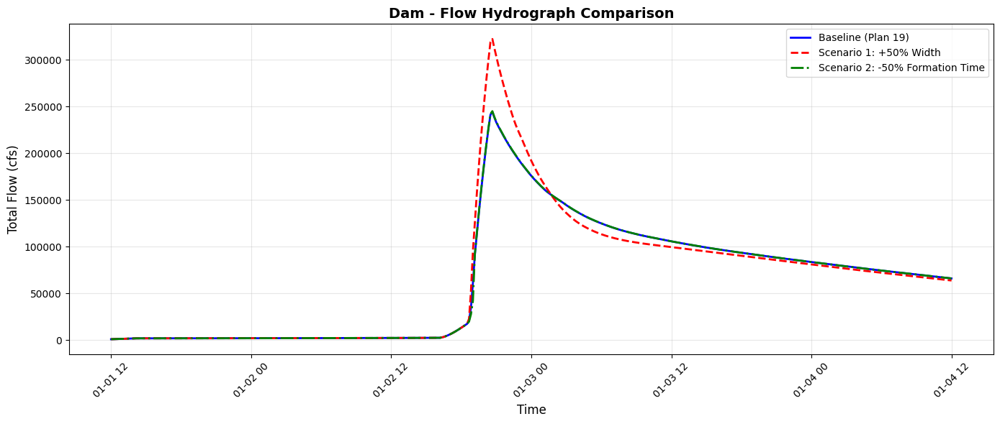
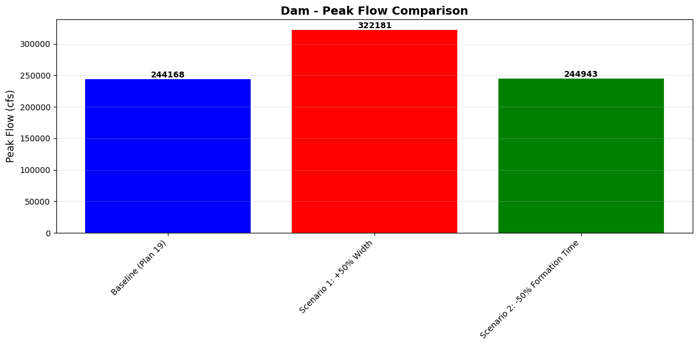
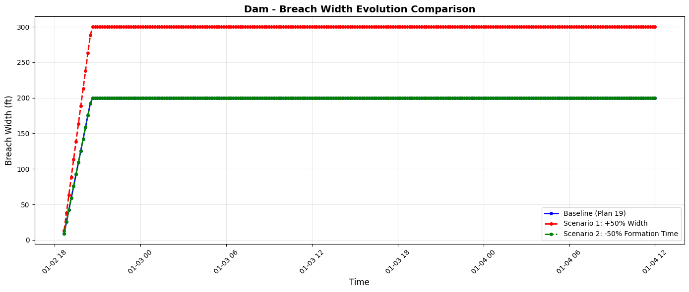

Dam Breach Results¶
Overview¶
This notebook demonstrates extracting dam breach analysis results from HEC-RAS HDF5 files. Breach modeling simulates catastrophic failure of dams or levees.
Breach Analysis Components: - Breach Formation: Time-dependent widening and deepening of breach - Breach Outflow: Flow through developing breach opening - Downstream Propagation: Flood wave routing downstream - Reservoir Drawdown: Water surface in reservoir during breach
HDF5 Structure for Breach Results¶
/Results/Unsteady/Output/
├── Output Blocks/
│ └── Base Output/
│ └── Unsteady Time Series/
│ ├── SA/2D Area Conn/
│ │ └── {Breach Name}/
│ │ ├── Breach/
│ │ │ ├── Bottom Width/ # Breach width at bottom
│ │ │ ├── Top Width/ # Breach width at top
│ │ │ ├── Bottom Elevation/ # Breach invert elevation
│ │ │ ├── Weir Flow/ # Weir-like flow component
│ │ │ └── Pipe Flow/ # Pressure flow component
│ │ ├── Flow/ # Total breach outflow
│ │ └── Upstream Water Surface/ # Reservoir WSE
Breach Parameters (time-varying): - Width: Breach widens over time (linear, sine, or user-defined) - Invert: Breach deepens (erodes downward) - Flow: Combination of weir and orifice flow - Formation Time: Time from initiation to full formation
Breach Modeling Theory¶
Failure Modes: - Overtopping: Erosion starts at crest, progresses downstream - Piping: Internal erosion, sudden collapse - Earthquake: Instantaneous breach - Programmed: User-defined breach progression
Flow Equations:
Qweir = Cw * Ltop * H^1.5 (Weir flow - unsubmerged)
Qorifice = Co * Abottom * sqrt(H) (Orifice flow - submerged)
Qtotal = Qweir + Qorifice (Combined)
Where: - Cw = weir coefficient - Ltop = top width of breach - H = head difference - Co = orifice coefficient - Abottom = bottom area of breach
Reference Documentation¶
- HEC-RAS User's Manual, Chapter 16: Dam Break Analysis
- FEMA Dam Safety Guidelines - Breach modeling requirements
- ASDSO Breach Parameters - Recommended breach parameter selection
Regulatory Context¶
Dam breach analysis typically required for: - Hazard Classification: Determine dam hazard potential (High, Significant, Low) - Emergency Action Plans (EAP): Inundation mapping for evacuation planning - Dam Safety Inspections: Assess consequences of failure - FEMA Flood Maps: Breach scenarios for floodplain mapping
# =============================================================================
# DEVELOPMENT MODE TOGGLE
# =============================================================================
USE_LOCAL_SOURCE = False # <-- TOGGLE THIS
if USE_LOCAL_SOURCE:
import sys
from pathlib import Path
local_path = str(Path.cwd().parent)
if local_path not in sys.path:
sys.path.insert(0, local_path)
print(f"📁 LOCAL SOURCE MODE: Loading from {local_path}/ras_commander")
else:
print("📦 PIP PACKAGE MODE: Loading installed ras-commander")
# Import ras-commander
from ras_commander import HdfResultsBreach, HdfResultsPlan, HdfStruc, RasBreach, RasCmdr, RasExamples, RasPlan, get_logger, init_ras_project, ras
# Standard imports
import pandas as pd
import matplotlib.pyplot as plt
import numpy as np
import shutil
# Verify which version loaded
import ras_commander
print(f"✓ Loaded: {ras_commander.__file__}")
📦 PIP PACKAGE MODE: Loading installed ras-commander
✓ Loaded: c:\Users\billk_clb\anaconda3\envs\rascmdr_piptest\Lib\site-packages\ras_commander\__init__.py
Parameters¶
Configure these values to customize the notebook for your project.
# =============================================================================
# PARAMETERS - Edit these to customize the notebook
# =============================================================================
from pathlib import Path
# Project Configuration
PROJECT_NAME = "BaldEagleCrkMulti2D" # Example project to extract
RAS_VERSION = "6.6" # HEC-RAS version (6.3, 6.5, 6.6, etc.)
# HDF Analysis Settings
PLAN = "19" # Plan number (for HDF file path)
TIME_INDEX = -1 # Time step index (-1 = last)
PROFILE = "Max" # Profile name for steady analysis
print(f"Configuration: {PROJECT_NAME} project, Plan {PLAN}, RAS {RAS_VERSION}")
Configuration: BaldEagleCrkMulti2D project, Plan 19, RAS 6.6
Dam Breach Results Extraction and Sensitivity Analysis¶
This notebook demonstrates: 1. Extracting baseline breach results from HDF files 2. Reading breach parameters from plan files 3. Modifying parameters iteratively (one parameter at a time) 4. Comparing results across different scenarios 5. Visualizing sensitivity to parameter changes
Project: BaldEagleCrkMulti2D (HEC-RAS Example)
Baseline Plan: 02
Version: 6.6
Workflow: - Extract baseline results - Clone plan and modify one parameter - Re-extract results and compare - Repeat for multiple parameters - Plot all scenarios together
Setup and Imports¶
# Standard imports
import sys
from pathlib import Path
import pandas as pd
import matplotlib.pyplot as plt
import numpy as np
import shutil
1. Extract and Initialize Project¶
# Extract the BaldEagleCrkMulti2D example project using static method
example_project_folder = RasExamples.extract_project(PROJECT_NAME, suffix="16")
print(f"Extracted project to: {example_project_folder}")
# Verify the path exists
print(f"BaldEagleCrkMulti2D project exists: {example_project_folder.exists()}")
# Set project_path variable for compatibility with rest of notebook
project_path = example_project_folder
2026-01-13 13:08:00 - ras_commander.RasExamples - INFO - Found zip file: C:\Users\billk_clb\anaconda3\envs\rascmdr_piptest\Lib\site-packages\examples\Example_Projects_6_6.zip
2026-01-13 13:08:00 - ras_commander.RasExamples - INFO - Loading project data from CSV...
2026-01-13 13:08:00 - ras_commander.RasExamples - INFO - Loaded 68 projects from CSV.
2026-01-13 13:08:00 - ras_commander.RasExamples - INFO - ----- RasExamples Extracting Project -----
2026-01-13 13:08:00 - ras_commander.RasExamples - INFO - Extracting project 'BaldEagleCrkMulti2D' as 'BaldEagleCrkMulti2D_16'
2026-01-13 13:08:00 - ras_commander.RasExamples - INFO - Folder 'BaldEagleCrkMulti2D_16' already exists. Deleting existing folder...
2026-01-13 13:08:00 - ras_commander.RasExamples - INFO - Existing folder 'BaldEagleCrkMulti2D_16' has been deleted.
2026-01-13 13:08:02 - ras_commander.RasExamples - INFO - Successfully extracted project 'BaldEagleCrkMulti2D' to C:\Users\billk_clb\anaconda3\envs\rascmdr_piptest\Lib\site-packages\examples\example_projects\BaldEagleCrkMulti2D_16
Extracted project to: C:\Users\billk_clb\anaconda3\envs\rascmdr_piptest\Lib\site-packages\examples\example_projects\BaldEagleCrkMulti2D_16
BaldEagleCrkMulti2D project exists: True
# Extract the BaldEagleCrkMulti2D example project using static method
example_project_folder = RasExamples.extract_project(PROJECT_NAME, suffix="16")
print(f"Extracted project to: {example_project_folder}")
# Verify the path exists
print(f"BaldEagleCrkMulti2D project exists: {example_project_folder.exists()}")
# Set project_path variable for compatibility with rest of notebook
project_path = example_project_folder
2026-01-13 13:08:02 - ras_commander.RasExamples - INFO - ----- RasExamples Extracting Project -----
2026-01-13 13:08:02 - ras_commander.RasExamples - INFO - Extracting project 'BaldEagleCrkMulti2D' as 'BaldEagleCrkMulti2D_16'
2026-01-13 13:08:02 - ras_commander.RasExamples - INFO - Folder 'BaldEagleCrkMulti2D_16' already exists. Deleting existing folder...
2026-01-13 13:08:02 - ras_commander.RasExamples - INFO - Existing folder 'BaldEagleCrkMulti2D_16' has been deleted.
2026-01-13 13:08:03 - ras_commander.RasExamples - INFO - Successfully extracted project 'BaldEagleCrkMulti2D' to C:\Users\billk_clb\anaconda3\envs\rascmdr_piptest\Lib\site-packages\examples\example_projects\BaldEagleCrkMulti2D_16
Extracted project to: C:\Users\billk_clb\anaconda3\envs\rascmdr_piptest\Lib\site-packages\examples\example_projects\BaldEagleCrkMulti2D_16
BaldEagleCrkMulti2D project exists: True
# Initialize the project
init_ras_project(project_path, RAS_VERSION)
print(f"\nInitialized project: {ras.project_name}")
print(f"\nAvailable plans:")
ras.plan_df
# This is the SA to 2D Dam Break Run
template_plan = PLAN
2026-01-13 13:08:03 - ras_commander.RasMap - INFO - Successfully parsed RASMapper file: C:\Users\billk_clb\anaconda3\envs\rascmdr_piptest\Lib\site-packages\examples\example_projects\BaldEagleCrkMulti2D_16\BaldEagleDamBrk.rasmap
2026-01-13 13:08:03 - ras_commander.RasPrj - INFO - Updated results_df with 11 plan(s)
Initialized project: BaldEagleDamBrk
Available plans:
| plan_number | unsteady_number | geometry_number | Plan Title | Program Version | Short Identifier | Simulation Date | Computation Interval | Mapping Interval | Run HTab | ... | Friction Slope Method | UNET D2 SolverType | UNET D2 Name | HDF_Results_Path | Geom File | Geom Path | Flow File | Flow Path | full_path | flow_type | |
|---|---|---|---|---|---|---|---|---|---|---|---|---|---|---|---|---|---|---|---|---|---|
| 0 | 13 | 07 | 06 | PMF with Multi 2D Areas | 5.10 | PMF Multi 2D | 01JAN1999,1200,04JAN1999,1200 | 30SEC | 30MIN | 1 | ... | 1 | Pardiso (Direct) | 193 | None | 06 | C:\Users\billk_clb\anaconda3\envs\rascmdr_pipt... | 07 | C:\Users\billk_clb\anaconda3\envs\rascmdr_pipt... | C:\Users\billk_clb\anaconda3\envs\rascmdr_pipt... | Unsteady |
| 1 | 15 | 12 | 08 | 1d-2D Dambreak Refined Grid | 5.10 | 1D-2D Refined Grid | 01JAN1999,1200,04JAN1999,1200 | 20SEC | 5MIN | 1 | ... | 1 | NaN | BaldEagleCr | None | 08 | C:\Users\billk_clb\anaconda3\envs\rascmdr_pipt... | 12 | C:\Users\billk_clb\anaconda3\envs\rascmdr_pipt... | C:\Users\billk_clb\anaconda3\envs\rascmdr_pipt... | Unsteady |
| 2 | 17 | 09 | 10 | 2D to 1D No Dam | 5.00 | 2D to 1D No Dam | 01JAN1999,1200,06JAN1999,1200 | 1MIN | 5MIN | 1 | ... | 1 | NaN | Upstream2D | None | 10 | C:\Users\billk_clb\anaconda3\envs\rascmdr_pipt... | 09 | C:\Users\billk_clb\anaconda3\envs\rascmdr_pipt... | C:\Users\billk_clb\anaconda3\envs\rascmdr_pipt... | Unsteady |
| 3 | 18 | 10 | 11 | 2D to 2D Run | 5.00 | 2D to 2D Run | 01JAN1999,1200,04JAN1999,1200 | 20SEC | 5MIN | 1 | ... | 1 | NaN | BaldEagleCr | None | 11 | C:\Users\billk_clb\anaconda3\envs\rascmdr_pipt... | 10 | C:\Users\billk_clb\anaconda3\envs\rascmdr_pipt... | C:\Users\billk_clb\anaconda3\envs\rascmdr_pipt... | Unsteady |
| 4 | 19 | 11 | 12 | SA to 2D Dam Break Run | 5.00 | SA to 2D Dam Break | 01JAN1999,1200,04JAN1999,1200 | 20SEC | 10MIN | 1 | ... | 1 | NaN | BaldEagleCr | None | 12 | C:\Users\billk_clb\anaconda3\envs\rascmdr_pipt... | 11 | C:\Users\billk_clb\anaconda3\envs\rascmdr_pipt... | C:\Users\billk_clb\anaconda3\envs\rascmdr_pipt... | Unsteady |
| 5 | 03 | 13 | 09 | Single 2D Area - Internal Dam Structure | 5.04 | Single 2D | 01JAN1999,1200,04JAN1999,1200 | 30SEC | 10MIN | 1 | ... | 1 | NaN | BaldEagleCr | None | 09 | C:\Users\billk_clb\anaconda3\envs\rascmdr_pipt... | 13 | C:\Users\billk_clb\anaconda3\envs\rascmdr_pipt... | C:\Users\billk_clb\anaconda3\envs\rascmdr_pipt... | Unsteady |
| 6 | 04 | 01 | 13 | SA to 2D Area Conn - 2D Levee Structure | 5.00 | 2D Levee Struc | 01JAN1999,1200,04JAN1999,1200 | 20SEC | 5MIN | 1 | ... | 1 | NaN | BaldEagleCr | None | 13 | C:\Users\billk_clb\anaconda3\envs\rascmdr_pipt... | 01 | C:\Users\billk_clb\anaconda3\envs\rascmdr_pipt... | C:\Users\billk_clb\anaconda3\envs\rascmdr_pipt... | Unsteady |
| 7 | 02 | 01 | 01 | SA to Detailed 2D Breach | 5.10 | SA-2D Det Brch | 01JAN1999,1200,04JAN1999,1200 | 10SEC | 5MIN | 1 | ... | 1 | Pardiso (Direct) | BaldEagleCr | None | 01 | C:\Users\billk_clb\anaconda3\envs\rascmdr_pipt... | 01 | C:\Users\billk_clb\anaconda3\envs\rascmdr_pipt... | C:\Users\billk_clb\anaconda3\envs\rascmdr_pipt... | Unsteady |
| 8 | 01 | 01 | 01 | SA to Detailed 2D Breach FEQ | 5.03 | SA-2D Det FEQ | 01JAN1999,1200,04JAN1999,1200 | 5SEC | 5MIN | 1 | ... | 1 | NaN | BaldEagleCr | None | 01 | C:\Users\billk_clb\anaconda3\envs\rascmdr_pipt... | 01 | C:\Users\billk_clb\anaconda3\envs\rascmdr_pipt... | C:\Users\billk_clb\anaconda3\envs\rascmdr_pipt... | Unsteady |
| 9 | 05 | 02 | 03 | Single 2D area with Bridges FEQ | 5.10 | Single 2D Bridges FEQ | 01JAN1999,1200,04JAN1999,1200 | 5SEC | 10MIN | -1 | ... | 1 | PARDISO (Direct) | BaldEagleCr | None | 03 | C:\Users\billk_clb\anaconda3\envs\rascmdr_pipt... | 02 | C:\Users\billk_clb\anaconda3\envs\rascmdr_pipt... | C:\Users\billk_clb\anaconda3\envs\rascmdr_pipt... | Unsteady |
| 10 | 06 | 03 | 09 | Gridded Precip - Infiltration | 6.00 | Grid Precip Infiltration | 09SEP2018,0000,14SEP2018,0000 | 20SEC | 10MIN | -1 | ... | 1 | Pardiso (Direct) | BaldEagleCr | None | 09 | C:\Users\billk_clb\anaconda3\envs\rascmdr_pipt... | 03 | C:\Users\billk_clb\anaconda3\envs\rascmdr_pipt... | C:\Users\billk_clb\anaconda3\envs\rascmdr_pipt... | Unsteady |
11 rows × 30 columns
2. BASELINE: Extract Existing Results from Plan 02¶
First, extract and analyze the baseline breach behavior from the existing Plan 02 results.
Important Note: HDF Results Files¶
This example project may not include pre-computed HDF results (.p02.hdf files). These files are generated when HEC-RAS runs a simulation.
If you encounter "HDF file not found" errors: 1. Option A: Run HEC-RAS simulation for Plan 02 first 2. Option B: Use the RasCmdr class to run simulation from Python (see cell below) 3. Option C: Use a different project with existing results (e.g., Scott County)
The notebook will gracefully handle missing results and still demonstrate parameter modification.
# Initialize variables to None (prevents NameError in later cells)
target_structure = None
baseline_ts = pd.DataFrame()
baseline_summary = pd.DataFrame()
baseline_params = None
baseline_geom = []
scenarios = {}
summaries = {}
2.1 Identify Breach Structures¶
# List breach structures from PLAN FILE (for parameter operations)
# This ensures structure names match between listing and read_breach_block()
breach_structures_list = RasBreach.list_breach_structures_plan(template_plan)
print("Breach Structures in Plan File:")
for struct in breach_structures_list:
if struct['structure']: # Filter empty names
status = "ACTIVE" if struct['is_active'] else "INACTIVE"
location = f"{struct['river']}/{struct['reach']}/RS {struct['station']}" if struct['river'] else "No location"
print(f" - {struct['structure']}: {status} ({location})")
# Get active structure names for parameter operations
breach_structures = [s['structure'] for s in breach_structures_list
if s['structure'] and s['is_active']]
if breach_structures:
target_structure = breach_structures[0]
print(f"\nTarget structure for analysis: {target_structure}")
print(f" This name will work with RasBreach.read_breach_block()")
else:
print("\nWARNING: No active breach structures found!")
target_structure = None
2026-01-13 13:08:03 - ras_commander.RasBreach - INFO - Found 2 breach structures in BaldEagleDamBrk.p19
Breach Structures in Plan File:
- Dam: ACTIVE (No location)
Target structure for analysis: Dam
This name will work with RasBreach.read_breach_block()
if target_structure: try: # Extract complete breach time series from HDF results baseline_ts = HdfResultsBreach.get_breach_timeseries("02", target_structure)
print(f"Baseline Time Series Extracted: {baseline_ts.shape}")
print(f"\nColumns: {list(baseline_ts.columns)}")
print(f"\nFirst few timesteps:")
print(baseline_ts.head())
# Get summary statistics from HDF results
baseline_summary = HdfResultsBreach.get_breach_summary("02", target_structure)
print(f"\nBaseline Summary Statistics:")
print(baseline_summary.to_string(index=False))
# Store baseline for later comparison
scenarios = {
'Baseline (Plan 02)': baseline_ts.copy()
}
summaries = {
'Baseline (Plan 02)': baseline_summary.copy()
}
except (FileNotFoundError, OSError) as e:
print(f"Could not extract baseline time series: {e}")
print("Continuing with parameter analysis only...")
baseline_ts = pd.DataFrame()
baseline_summary = pd.DataFrame()
scenarios = {}
summaries = {}
else: print("Skipping baseline extraction - no breach structure available") scenarios = {} summaries = {}
'19'
# Read current parameters
params = RasBreach.read_breach_block(template_plan, "Dam")
geom = [x.strip() for x in params['values']['Breach Geom'].split(',')]
# Update Final Bottom Elevation (index 2)
geom[2] = 605 # New elevation in feet
# Write back
RasBreach.update_breach_block(template_plan, "Dam", geom_values=geom)
2026-01-13 13:08:03 - ras_commander.RasBreach - INFO - Read breach block for Dam from BaldEagleDamBrk.p19
2026-01-13 13:08:03 - ras_commander.RasBreach - INFO - Created backup: BaldEagleDamBrk_backup_20260113_130803.p19
2026-01-13 13:08:04 - ras_commander.RasBreach - INFO - Updated breach block for Dam in BaldEagleDamBrk.p19
{'structure_name': 'Dam',
'is_active': True,
'river': '',
'reach': '',
'station': '',
'values': {'Breach Loc': ' , , ,True,Dam',
'Breach Method': ' 0',
'Breach Geom': '5700,200,605,0.5,0.5,True,0.5,630,2,2.6',
'Breach Start': 'True,661,,,False,,,0',
'Breach Progression': ' 2',
'Simplified Physical Breach Downcutting': ' 2',
'Simplified Physical Breach Widening': ' 2',
'Starting Notch Depth': ' 3.402823E+38',
'Initial Piping Diameter': ' 3.402823E+38',
'Mass Wasting Options': ' 0',
'Mass Wasting Width': ' 3.402823E+38',
'Mass Wasting Duration': ' 3.402823E+38',
'Mass Wasting Final Bottom Elevation': ' 3.402823E+38',
'Breach Use User Defined Growth Ratio': '-1',
'Breach User Defined Growth Ratio': '1'},
'table_rows': {'Breach Progression': [[0.0, 0.0, 1.0, 1.0]],
'Simplified Physical Breach Downcutting': [[0.0, 0.0, 1.0, 1.0]],
'Simplified Physical Breach Widening': [[0.0, 0.0, 1.0, 1.0]]}}
if target_structure:
# Read breach parameters from plan file
baseline_params = RasBreach.read_breach_block("02", target_structure)
print(f"Baseline Parameters for {target_structure}:")
print("=" * 80)
print(f"\nActivation: {baseline_params['is_active']}")
print(f"\nKey Parameter Values:")
for key in ['Breach Method', 'Breach Geom', 'Breach Start', 'Breach Progression']:
if key in baseline_params['values']:
print(f" {key}: {baseline_params['values'][key]}")
# Parse geometry values for modification
geom_str = baseline_params['values'].get('Breach Geom', '')
baseline_geom = [x.strip() for x in geom_str.split(',') if x.strip()]
print(f"\nBaseline Geometry (parsed): {baseline_geom}")
# Explain Breach Geom field structure
if len(baseline_geom) >= 10:
print("\nBreach Geom Field Structure (CSV, 10 fields):")
print(f" [0] Centerline/Station: {baseline_geom[0]} ft")
print(f" [1] Initial Bottom Width: {baseline_geom[1]} ft")
print(f" [2] Final Bottom Elevation: {baseline_geom[2]} ft <-- KEY PARAMETER")
print(f" [3] Left Side Slope: {baseline_geom[3]} (H:V)")
print(f" [4] Right Side Slope: {baseline_geom[4]} (H:V)")
print(f" [5] Active Flag: {baseline_geom[5]}")
print(f" [6] Weir Coefficient: {baseline_geom[6]}")
print(f" [7] Top Elevation: {baseline_geom[7]} ft")
print(f" [8] Formation Method: {baseline_geom[8]} (1=Time, 2=Trigger)")
print(f" [9] Formation Time/Threshold: {baseline_geom[9]} hrs or ft")
print("\n--- Example: Update Final Bottom Elevation ---")
print(f"Current value: {baseline_geom[2]} ft")
print("To change to 605 ft:")
print(" new_geom = baseline_geom.copy()")
print(" new_geom[2] = 605")
print(' RasBreach.update_breach_block("template_plan", "Dam", geom_values=new_geom)')
else:
print("Skipping parameter reading - no breach structure available")
baseline_params = None
baseline_geom = []
2026-01-13 13:08:04 - ras_commander.RasBreach - INFO - Read breach block for Dam from BaldEagleDamBrk.p02
Baseline Parameters for Dam:
================================================================================
Activation: True
Key Parameter Values:
Breach Method: 0
Breach Geom: 5722,200,595,0.5,0.5,True,0.5,630,3.2,2.6
Breach Start: True,676,,,False,,,0
Breach Progression: 21
Baseline Geometry (parsed): ['5722', '200', '595', '0.5', '0.5', 'True', '0.5', '630', '3.2', '2.6']
Breach Geom Field Structure (CSV, 10 fields):
[0] Centerline/Station: 5722 ft
[1] Initial Bottom Width: 200 ft
[2] Final Bottom Elevation: 595 ft <-- KEY PARAMETER
[3] Left Side Slope: 0.5 (H:V)
[4] Right Side Slope: 0.5 (H:V)
[5] Active Flag: True
[6] Weir Coefficient: 0.5
[7] Top Elevation: 630 ft
[8] Formation Method: 3.2 (1=Time, 2=Trigger)
[9] Formation Time/Threshold: 2.6 hrs or ft
--- Example: Update Final Bottom Elevation ---
Current value: 595 ft
To change to 605 ft:
new_geom = baseline_geom.copy()
new_geom[2] = 605
RasBreach.update_breach_block("template_plan", "Dam", geom_values=new_geom)
# First, compute the template plan to generate HDF results
print(f"Computing plan {template_plan} to generate HDF results...")
print("(This may take 1-2 minutes)")
RasCmdr.compute_plan(template_plan, skip_existing=True, num_cores=2)
print(f"Plan {template_plan} complete")
# Now extract breach results from the HDF
if target_structure:
# Extract complete breach time series from HDF results
baseline_ts = HdfResultsBreach.get_breach_timeseries(template_plan, target_structure)
print(f"Baseline Time Series Extracted: {baseline_ts.shape}")
print(f"\nColumns: {list(baseline_ts.columns)}")
print(f"\nFirst few timesteps:")
print(baseline_ts.head())
# Get summary statistics from HDF results
baseline_summary = HdfResultsBreach.get_breach_summary(template_plan, target_structure)
print(f"\nBaseline Summary Statistics:")
print(baseline_summary.to_string(index=False))
# Store baseline for later comparison
scenarios = {
f'Baseline (Plan {template_plan})': baseline_ts.copy()
}
summaries = {
f'Baseline (Plan {template_plan})': baseline_summary.copy()
}
else:
print("Skipping baseline extraction - no breach structure available")
baseline_ts = pd.DataFrame()
baseline_summary = pd.DataFrame()
scenarios = {}
summaries = {}
2026-01-13 13:08:04 - ras_commander.RasCmdr - INFO - Using ras_object with project folder: C:\Users\billk_clb\anaconda3\envs\rascmdr_piptest\Lib\site-packages\examples\example_projects\BaldEagleCrkMulti2D_16
2026-01-13 13:08:04 - ras_commander.RasUtils - INFO - Using provided plan file path: C:\Users\billk_clb\anaconda3\envs\rascmdr_piptest\Lib\site-packages\examples\example_projects\BaldEagleCrkMulti2D_16\BaldEagleDamBrk.p19
2026-01-13 13:08:04 - ras_commander.RasUtils - INFO - Successfully updated file: C:\Users\billk_clb\anaconda3\envs\rascmdr_piptest\Lib\site-packages\examples\example_projects\BaldEagleCrkMulti2D_16\BaldEagleDamBrk.p19
2026-01-13 13:08:04 - ras_commander.RasCmdr - INFO - Set number of cores to 2 for plan: 19
2026-01-13 13:08:04 - ras_commander.RasCmdr - INFO - Running HEC-RAS from the Command Line:
2026-01-13 13:08:04 - ras_commander.RasCmdr - INFO - Running command: "C:\Program Files (x86)\HEC\HEC-RAS\6.6\Ras.exe" -c "C:\Users\billk_clb\anaconda3\envs\rascmdr_piptest\Lib\site-packages\examples\example_projects\BaldEagleCrkMulti2D_16\BaldEagleDamBrk.prj" "C:\Users\billk_clb\anaconda3\envs\rascmdr_piptest\Lib\site-packages\examples\example_projects\BaldEagleCrkMulti2D_16\BaldEagleDamBrk.p19"
Computing plan 19 to generate HDF results...
(This may take 1-2 minutes)
2026-01-13 13:08:35 - ras_commander.RasCmdr - INFO - HEC-RAS execution completed for plan: 19
2026-01-13 13:08:35 - ras_commander.RasCmdr - INFO - Total run time for plan 19: 31.78 seconds
2026-01-13 13:08:35 - ras_commander.hdf.HdfResultsPlan - INFO - Using existing Path object HDF file: C:\Users\billk_clb\anaconda3\envs\rascmdr_piptest\Lib\site-packages\examples\example_projects\BaldEagleCrkMulti2D_16\BaldEagleDamBrk.p19.hdf
2026-01-13 13:08:35 - ras_commander.hdf.HdfResultsPlan - INFO - Final validated file path: C:\Users\billk_clb\anaconda3\envs\rascmdr_piptest\Lib\site-packages\examples\example_projects\BaldEagleCrkMulti2D_16\BaldEagleDamBrk.p19.hdf
2026-01-13 13:08:35 - ras_commander.hdf.HdfResultsPlan - INFO - Reading computation messages from HDF: BaldEagleDamBrk.p19.hdf
2026-01-13 13:08:35 - ras_commander.hdf.HdfResultsPlan - INFO - Successfully extracted 1394 characters from HDF
2026-01-13 13:08:35 - ras_commander.hdf.HdfResultsPlan - INFO - Using existing Path object HDF file: C:\Users\billk_clb\anaconda3\envs\rascmdr_piptest\Lib\site-packages\examples\example_projects\BaldEagleCrkMulti2D_16\BaldEagleDamBrk.p19.hdf
2026-01-13 13:08:35 - ras_commander.hdf.HdfResultsPlan - INFO - Final validated file path: C:\Users\billk_clb\anaconda3\envs\rascmdr_piptest\Lib\site-packages\examples\example_projects\BaldEagleCrkMulti2D_16\BaldEagleDamBrk.p19.hdf
2026-01-13 13:08:35 - ras_commander.hdf.HdfResultsPlan - INFO - Extracting Plan Information from: BaldEagleDamBrk.p19.hdf
2026-01-13 13:08:35 - ras_commander.hdf.HdfResultsPlan - INFO - Plan Name: SA to 2D Dam Break Run
2026-01-13 13:08:35 - ras_commander.hdf.HdfResultsPlan - INFO - Simulation Duration (hours): 72.0
2026-01-13 13:08:35 - ras_commander.hdf.HdfResultsPlan - INFO - Using existing Path object HDF file: C:\Users\billk_clb\anaconda3\envs\rascmdr_piptest\Lib\site-packages\examples\example_projects\BaldEagleCrkMulti2D_16\BaldEagleDamBrk.p19.hdf
2026-01-13 13:08:35 - ras_commander.hdf.HdfResultsPlan - INFO - Final validated file path: C:\Users\billk_clb\anaconda3\envs\rascmdr_piptest\Lib\site-packages\examples\example_projects\BaldEagleCrkMulti2D_16\BaldEagleDamBrk.p19.hdf
c:\Users\billk_clb\anaconda3\envs\rascmdr_piptest\Lib\site-packages\ras_commander\RasPrj.py:1514: FutureWarning: The behavior of DataFrame concatenation with empty or all-NA entries is deprecated. In a future version, this will no longer exclude empty or all-NA columns when determining the result dtypes. To retain the old behavior, exclude the relevant entries before the concat operation.
self.results_df = pd.concat([self.results_df, new_results], ignore_index=True)
2026-01-13 13:08:35 - ras_commander.RasPrj - INFO - Updated results_df with 1 plan(s)
2026-01-13 13:08:35 - ras_commander.hdf.HdfResultsBreach - INFO - Final validated file path: C:\Users\billk_clb\anaconda3\envs\rascmdr_piptest\Lib\site-packages\examples\example_projects\BaldEagleCrkMulti2D_16\BaldEagleDamBrk.p19.hdf
2026-01-13 13:08:35 - ras_commander.hdf.HdfResultsBreach - INFO - Using existing Path object HDF file: C:\Users\billk_clb\anaconda3\envs\rascmdr_piptest\Lib\site-packages\examples\example_projects\BaldEagleCrkMulti2D_16\BaldEagleDamBrk.p19.hdf
2026-01-13 13:08:35 - ras_commander.hdf.HdfResultsBreach - INFO - Final validated file path: C:\Users\billk_clb\anaconda3\envs\rascmdr_piptest\Lib\site-packages\examples\example_projects\BaldEagleCrkMulti2D_16\BaldEagleDamBrk.p19.hdf
2026-01-13 13:08:35 - ras_commander.hdf.HdfResultsBreach - INFO - Extracted 433 timesteps for 1 structure(s)
2026-01-13 13:08:35 - ras_commander.hdf.HdfResultsBreach - INFO - Using existing Path object HDF file: C:\Users\billk_clb\anaconda3\envs\rascmdr_piptest\Lib\site-packages\examples\example_projects\BaldEagleCrkMulti2D_16\BaldEagleDamBrk.p19.hdf
2026-01-13 13:08:35 - ras_commander.hdf.HdfResultsBreach - INFO - Final validated file path: C:\Users\billk_clb\anaconda3\envs\rascmdr_piptest\Lib\site-packages\examples\example_projects\BaldEagleCrkMulti2D_16\BaldEagleDamBrk.p19.hdf
2026-01-13 13:08:35 - ras_commander.hdf.HdfStruc - INFO - Using existing Path object HDF file: C:\Users\billk_clb\anaconda3\envs\rascmdr_piptest\Lib\site-packages\examples\example_projects\BaldEagleCrkMulti2D_16\BaldEagleDamBrk.p19.hdf
2026-01-13 13:08:35 - ras_commander.hdf.HdfStruc - INFO - Final validated file path: C:\Users\billk_clb\anaconda3\envs\rascmdr_piptest\Lib\site-packages\examples\example_projects\BaldEagleCrkMulti2D_16\BaldEagleDamBrk.p19.hdf
2026-01-13 13:08:35 - ras_commander.hdf.HdfStruc - INFO - Using existing Path object HDF file: C:\Users\billk_clb\anaconda3\envs\rascmdr_piptest\Lib\site-packages\examples\example_projects\BaldEagleCrkMulti2D_16\BaldEagleDamBrk.p19.hdf
2026-01-13 13:08:35 - ras_commander.hdf.HdfStruc - INFO - Final validated file path: C:\Users\billk_clb\anaconda3\envs\rascmdr_piptest\Lib\site-packages\examples\example_projects\BaldEagleCrkMulti2D_16\BaldEagleDamBrk.p19.hdf
2026-01-13 13:08:35 - ras_commander.hdf.HdfStruc - INFO - Found 1 SA/2D connection structures: ['Dam']
2026-01-13 13:08:35 - ras_commander.hdf.HdfResultsBreach - INFO - Extracted breach variables for 1 structure(s), 433 timesteps
2026-01-13 13:08:35 - ras_commander.hdf.HdfResultsBreach - INFO - Created combined breach timeseries with 433 rows
2026-01-13 13:08:35 - ras_commander.hdf.HdfResultsBreach - INFO - Final validated file path: C:\Users\billk_clb\anaconda3\envs\rascmdr_piptest\Lib\site-packages\examples\example_projects\BaldEagleCrkMulti2D_16\BaldEagleDamBrk.p19.hdf
2026-01-13 13:08:35 - ras_commander.hdf.HdfResultsBreach - INFO - Using existing Path object HDF file: C:\Users\billk_clb\anaconda3\envs\rascmdr_piptest\Lib\site-packages\examples\example_projects\BaldEagleCrkMulti2D_16\BaldEagleDamBrk.p19.hdf
2026-01-13 13:08:35 - ras_commander.hdf.HdfResultsBreach - INFO - Final validated file path: C:\Users\billk_clb\anaconda3\envs\rascmdr_piptest\Lib\site-packages\examples\example_projects\BaldEagleCrkMulti2D_16\BaldEagleDamBrk.p19.hdf
2026-01-13 13:08:35 - ras_commander.hdf.HdfResultsBreach - INFO - Using existing Path object HDF file: C:\Users\billk_clb\anaconda3\envs\rascmdr_piptest\Lib\site-packages\examples\example_projects\BaldEagleCrkMulti2D_16\BaldEagleDamBrk.p19.hdf
2026-01-13 13:08:35 - ras_commander.hdf.HdfResultsBreach - INFO - Final validated file path: C:\Users\billk_clb\anaconda3\envs\rascmdr_piptest\Lib\site-packages\examples\example_projects\BaldEagleCrkMulti2D_16\BaldEagleDamBrk.p19.hdf
2026-01-13 13:08:35 - ras_commander.hdf.HdfResultsBreach - INFO - Extracted 433 timesteps for 1 structure(s)
2026-01-13 13:08:35 - ras_commander.hdf.HdfResultsBreach - INFO - Using existing Path object HDF file: C:\Users\billk_clb\anaconda3\envs\rascmdr_piptest\Lib\site-packages\examples\example_projects\BaldEagleCrkMulti2D_16\BaldEagleDamBrk.p19.hdf
2026-01-13 13:08:35 - ras_commander.hdf.HdfResultsBreach - INFO - Final validated file path: C:\Users\billk_clb\anaconda3\envs\rascmdr_piptest\Lib\site-packages\examples\example_projects\BaldEagleCrkMulti2D_16\BaldEagleDamBrk.p19.hdf
2026-01-13 13:08:35 - ras_commander.hdf.HdfStruc - INFO - Using existing Path object HDF file: C:\Users\billk_clb\anaconda3\envs\rascmdr_piptest\Lib\site-packages\examples\example_projects\BaldEagleCrkMulti2D_16\BaldEagleDamBrk.p19.hdf
2026-01-13 13:08:35 - ras_commander.hdf.HdfStruc - INFO - Final validated file path: C:\Users\billk_clb\anaconda3\envs\rascmdr_piptest\Lib\site-packages\examples\example_projects\BaldEagleCrkMulti2D_16\BaldEagleDamBrk.p19.hdf
2026-01-13 13:08:35 - ras_commander.hdf.HdfStruc - INFO - Using existing Path object HDF file: C:\Users\billk_clb\anaconda3\envs\rascmdr_piptest\Lib\site-packages\examples\example_projects\BaldEagleCrkMulti2D_16\BaldEagleDamBrk.p19.hdf
2026-01-13 13:08:35 - ras_commander.hdf.HdfStruc - INFO - Final validated file path: C:\Users\billk_clb\anaconda3\envs\rascmdr_piptest\Lib\site-packages\examples\example_projects\BaldEagleCrkMulti2D_16\BaldEagleDamBrk.p19.hdf
2026-01-13 13:08:35 - ras_commander.hdf.HdfStruc - INFO - Found 1 SA/2D connection structures: ['Dam']
2026-01-13 13:08:35 - ras_commander.hdf.HdfResultsBreach - INFO - Extracted breach variables for 1 structure(s), 433 timesteps
2026-01-13 13:08:35 - ras_commander.hdf.HdfResultsBreach - INFO - Created combined breach timeseries with 433 rows
2026-01-13 13:08:35 - ras_commander.hdf.HdfStruc - INFO - Using existing Path object HDF file: C:\Users\billk_clb\anaconda3\envs\rascmdr_piptest\Lib\site-packages\examples\example_projects\BaldEagleCrkMulti2D_16\BaldEagleDamBrk.p19.hdf
2026-01-13 13:08:35 - ras_commander.hdf.HdfStruc - INFO - Final validated file path: C:\Users\billk_clb\anaconda3\envs\rascmdr_piptest\Lib\site-packages\examples\example_projects\BaldEagleCrkMulti2D_16\BaldEagleDamBrk.p19.hdf
2026-01-13 13:08:35 - ras_commander.hdf.HdfStruc - INFO - Using existing Path object HDF file: C:\Users\billk_clb\anaconda3\envs\rascmdr_piptest\Lib\site-packages\examples\example_projects\BaldEagleCrkMulti2D_16\BaldEagleDamBrk.p19.hdf
2026-01-13 13:08:35 - ras_commander.hdf.HdfStruc - INFO - Final validated file path: C:\Users\billk_clb\anaconda3\envs\rascmdr_piptest\Lib\site-packages\examples\example_projects\BaldEagleCrkMulti2D_16\BaldEagleDamBrk.p19.hdf
2026-01-13 13:08:35 - ras_commander.hdf.HdfStruc - INFO - Found 1 SA/2D connection structures: ['Dam']
2026-01-13 13:08:35 - ras_commander.hdf.HdfResultsBreach - INFO - Generated breach summary for 1 structure(s)
Plan 19 complete
Baseline Time Series Extracted: (433, 12)
Columns: ['datetime', 'total_flow', 'weir_flow', 'breach_flow', 'hw', 'tw', 'bottom_width', 'bottom_elevation', 'left_slope', 'right_slope', 'breach_velocity', 'breach_flow_area']
First few timesteps:
datetime total_flow weir_flow breach_flow hw \
0 1999-01-01 12:00:00 923.384338 0.0 NaN 630.002441
1 1999-01-01 12:10:00 1000.352905 0.0 NaN 630.004028
2 1999-01-01 12:20:00 1077.349976 0.0 NaN 630.007507
3 1999-01-01 12:30:00 1154.382690 0.0 NaN 630.013000
4 1999-01-01 12:40:00 1231.456177 0.0 NaN 630.020447
tw bottom_width bottom_elevation left_slope right_slope \
0 585.522766 NaN NaN NaN NaN
1 585.747986 NaN NaN NaN NaN
2 585.903809 NaN NaN NaN NaN
3 586.058167 NaN NaN NaN NaN
4 586.213623 NaN NaN NaN NaN
breach_velocity breach_flow_area
0 NaN NaN
1 NaN NaN
2 NaN NaN
3 NaN NaN
4 NaN NaN
Baseline Summary Statistics:
structure breach_initiated breach_at_time breach_at_date max_total_flow max_total_flow_time max_breach_flow max_breach_flow_time final_breach_width final_breach_depth max_hw max_tw
Dam True 1.274074 02JAN1999 18:34:40 244167.78125 1999-01-02 20:40:00 238721.25 1999-01-02 20:40:00 200.0 23.746826 661.506348 615.28833
# Baseline extraction already performed above.
# Re-run the previous cell if you need to refresh baseline_ts/summaries.
2.3 Read Baseline Parameters¶
# List breach structures from plan file (for parameter operations)
breach_structures_list = RasBreach.list_breach_structures_plan(template_plan)
print("Breach Structures in Plan File:")
for struct in breach_structures_list:
if struct['structure']: # Filter empty names
status = "ACTIVE" if struct['is_active'] else "INACTIVE"
print(f" - {struct['structure']}: {status}")
# Get active structure names
breach_structures = [s['structure'] for s in breach_structures_list
if s['structure'] and s['is_active']]
if breach_structures:
target_structure = breach_structures[0]
print(f"\nTarget structure for analysis: {target_structure}")
else:
target_structure = None
2026-01-13 13:08:35 - ras_commander.RasBreach - INFO - Found 2 breach structures in BaldEagleDamBrk.p19
Breach Structures in Plan File:
- Dam: ACTIVE
Target structure for analysis: Dam
Easy Parameter Modification with set_breach_geom()¶
NEW FUNCTION: RasBreach.set_breach_geom() provides a clean interface for modifying individual breach parameters without manually parsing/reconstructing the CSV.
# Example: Update just Final Bottom Elevation (most common modification)
if target_structure:
print("Example: Update Final Bottom Elevation to 605 ft")
print("=" * 60)
print("\nSimple approach using set_breach_geom():")
print(" RasBreach.set_breach_geom('template_plan', 'Dam',")
print(" final_bottom_elev=605)")
print("\nThis automatically:")
print(" 1. Reads current Breach Geom values")
print(" 2. Updates ONLY the final_bottom_elev field (index 2)")
print(" 3. Preserves all other parameters")
print(" 4. Writes back to plan file with backup")
print("\n\nOther common modifications:")
print("\n# Increase breach width by 50%")
print(" current_width = 200 # Read from baseline_params")
print(" RasBreach.set_breach_geom('template_plan', 'Dam',")
print(" initial_width=current_width * 1.5)")
print("\n# Change formation time")
print(" RasBreach.set_breach_geom('template_plan', 'Dam',")
print(" formation_time=3.5)")
print("\n# Update multiple parameters at once")
print(" RasBreach.set_breach_geom('template_plan', 'Dam',")
print(" final_bottom_elev=605,")
print(" initial_width=250,")
print(" formation_time=3.0)")
else:
print("No target structure available for examples")
Example: Update Final Bottom Elevation to 605 ft
============================================================
Simple approach using set_breach_geom():
RasBreach.set_breach_geom('template_plan', 'Dam',
final_bottom_elev=605)
This automatically:
1. Reads current Breach Geom values
2. Updates ONLY the final_bottom_elev field (index 2)
3. Preserves all other parameters
4. Writes back to plan file with backup
Other common modifications:
# Increase breach width by 50%
current_width = 200 # Read from baseline_params
RasBreach.set_breach_geom('template_plan', 'Dam',
initial_width=current_width * 1.5)
# Change formation time
RasBreach.set_breach_geom('template_plan', 'Dam',
formation_time=3.5)
# Update multiple parameters at once
RasBreach.set_breach_geom('template_plan', 'Dam',
final_bottom_elev=605,
initial_width=250,
formation_time=3.0)
if target_structure:
# Read breach parameters from plan file
baseline_params = RasBreach.read_breach_block(template_plan, target_structure)
print(f"Baseline Parameters for {target_structure}:")
print("=" * 80)
print(f"\nActivation: {baseline_params['is_active']}")
print(f"\nKey Parameter Values:")
for key in ['Breach Method', 'Breach Geom', 'Breach Start', 'Breach Progression']:
if key in baseline_params['values']:
print(f" {key}: {baseline_params['values'][key]}")
# Parse geometry values for modification
geom_str = baseline_params['values'].get('Breach Geom', '')
baseline_geom = [x.strip() for x in geom_str.split(',') if x.strip()]
print(f"\nBaseline Geometry (parsed): {baseline_geom}")
else:
print("Skipping parameter reading - no breach structure available")
baseline_params = None
baseline_geom = []
2026-01-13 13:08:35 - ras_commander.RasBreach - INFO - Read breach block for Dam from BaldEagleDamBrk.p19
Baseline Parameters for Dam:
================================================================================
Activation: True
Key Parameter Values:
Breach Method: 0
Breach Geom: 5700,200,605,0.5,0.5,True,0.5,630,2,2.6
Breach Start: True,661,,,False,,,0
Breach Progression: 2
Baseline Geometry (parsed): ['5700', '200', '605', '0.5', '0.5', 'True', '0.5', '630', '2', '2.6']
3. SCENARIO ANALYSIS: Modify Parameters and Compare Results¶
Now we'll create multiple scenarios by modifying breach parameters one at a time.
Workflow for each scenario: 1. Clone Plan 02 to a new plan number 2. Modify ONE parameter in the cloned plan 3. [User must run HEC-RAS simulation] 4. Extract results from the new plan 5. Compare with baseline
Note: This notebook demonstrates steps 1-2 and 4-5. You must run HEC-RAS (step 3) separately.
Scenario 1: Increase Breach Width by 50%¶
if target_structure and baseline_geom and len(baseline_geom) >= 2:
# Clone plan
scenario_1_plan = RasPlan.clone_plan(template_plan, "Scenario 1: +50% Width")
# Modify breach width (assuming index 1 is width)
new_geom = baseline_geom.copy()
original_width = float(baseline_geom[1])
new_width = original_width * 1.5
new_geom[1] = new_width
print(f"\nModifying breach width:")
print(f" Original: {original_width} ft")
print(f" New: {new_width} ft (+50%)")
# Update the plan
RasBreach.update_breach_block(
scenario_1_plan,
target_structure,
geom_values=new_geom
)
print(f"\n✓ Scenario 1 plan created: {scenario_1_plan}")
print(f" Next step: Run HEC-RAS simulation for plan {scenario_1_plan}")
else:
print("Skipping Scenario 1 - insufficient baseline data")
2026-01-13 13:08:35 - ras_commander.RasUtils - INFO - File cloned from C:\Users\billk_clb\anaconda3\envs\rascmdr_piptest\Lib\site-packages\examples\example_projects\BaldEagleCrkMulti2D_16\BaldEagleDamBrk.p19 to C:\Users\billk_clb\anaconda3\envs\rascmdr_piptest\Lib\site-packages\examples\example_projects\BaldEagleCrkMulti2D_16\BaldEagleDamBrk.p07
2026-01-13 13:08:35 - ras_commander.RasUtils - INFO - Successfully updated file: C:\Users\billk_clb\anaconda3\envs\rascmdr_piptest\Lib\site-packages\examples\example_projects\BaldEagleCrkMulti2D_16\BaldEagleDamBrk.p07
2026-01-13 13:08:35 - ras_commander.RasUtils - INFO - Project file updated with new Plan entry: 07
2026-01-13 13:08:36 - ras_commander.RasMap - INFO - Successfully parsed RASMapper file: C:\Users\billk_clb\anaconda3\envs\rascmdr_piptest\Lib\site-packages\examples\example_projects\BaldEagleCrkMulti2D_16\BaldEagleDamBrk.rasmap
2026-01-13 13:08:36 - ras_commander.hdf.HdfResultsPlan - INFO - Using existing Path object HDF file: C:\Users\billk_clb\anaconda3\envs\rascmdr_piptest\Lib\site-packages\examples\example_projects\BaldEagleCrkMulti2D_16\BaldEagleDamBrk.p19.hdf
2026-01-13 13:08:36 - ras_commander.hdf.HdfResultsPlan - INFO - Final validated file path: C:\Users\billk_clb\anaconda3\envs\rascmdr_piptest\Lib\site-packages\examples\example_projects\BaldEagleCrkMulti2D_16\BaldEagleDamBrk.p19.hdf
2026-01-13 13:08:36 - ras_commander.hdf.HdfResultsPlan - INFO - Reading computation messages from HDF: BaldEagleDamBrk.p19.hdf
2026-01-13 13:08:36 - ras_commander.hdf.HdfResultsPlan - INFO - Successfully extracted 1394 characters from HDF
2026-01-13 13:08:36 - ras_commander.hdf.HdfResultsPlan - INFO - Using existing Path object HDF file: C:\Users\billk_clb\anaconda3\envs\rascmdr_piptest\Lib\site-packages\examples\example_projects\BaldEagleCrkMulti2D_16\BaldEagleDamBrk.p19.hdf
2026-01-13 13:08:36 - ras_commander.hdf.HdfResultsPlan - INFO - Final validated file path: C:\Users\billk_clb\anaconda3\envs\rascmdr_piptest\Lib\site-packages\examples\example_projects\BaldEagleCrkMulti2D_16\BaldEagleDamBrk.p19.hdf
2026-01-13 13:08:36 - ras_commander.hdf.HdfResultsPlan - INFO - Extracting Plan Information from: BaldEagleDamBrk.p19.hdf
2026-01-13 13:08:36 - ras_commander.hdf.HdfResultsPlan - INFO - Plan Name: SA to 2D Dam Break Run
2026-01-13 13:08:36 - ras_commander.hdf.HdfResultsPlan - INFO - Simulation Duration (hours): 72.0
2026-01-13 13:08:36 - ras_commander.hdf.HdfResultsPlan - INFO - Using existing Path object HDF file: C:\Users\billk_clb\anaconda3\envs\rascmdr_piptest\Lib\site-packages\examples\example_projects\BaldEagleCrkMulti2D_16\BaldEagleDamBrk.p19.hdf
2026-01-13 13:08:36 - ras_commander.hdf.HdfResultsPlan - INFO - Final validated file path: C:\Users\billk_clb\anaconda3\envs\rascmdr_piptest\Lib\site-packages\examples\example_projects\BaldEagleCrkMulti2D_16\BaldEagleDamBrk.p19.hdf
2026-01-13 13:08:36 - ras_commander.RasPrj - INFO - Updated results_df with 12 plan(s)
2026-01-13 13:08:36 - ras_commander.RasBreach - INFO - Created backup: BaldEagleDamBrk_backup_20260113_130836.p07
Modifying breach width:
Original: 200.0 ft
New: 300.0 ft (+50%)
2026-01-13 13:08:36 - ras_commander.RasBreach - INFO - Updated breach block for Dam in BaldEagleDamBrk.p07
✓ Scenario 1 plan created: 07
Next step: Run HEC-RAS simulation for plan 07
if target_structure: # Scenario definitions scenario_plans = { 'Scenario 1: +50% Width': '03', 'Scenario 2: -50% Formation Time': '04', 'Scenario 3: Different Method': '05' }
# Try to extract results for each scenario from HDF files
for scenario_name, plan_num in scenario_plans.items():
try:
# Extract breach results from HDF using HdfResultsBreach
ts = HdfResultsBreach.get_breach_timeseries(plan_num, target_structure)
summary = HdfResultsBreach.get_breach_summary(plan_num, target_structure)
if not ts.empty:
scenarios[scenario_name] = ts
summaries[scenario_name] = summary
print(f"✓ Extracted: {scenario_name}")
else:
print(f"⚠ No results for: {scenario_name} (run HEC-RAS first)")
except FileNotFoundError as e:
print(f"⚠ HDF not found for {scenario_name}: Plan {plan_num} (run HEC-RAS first)")
except (FileNotFoundError, OSError) as e:
print(f"⚠ Could not extract {scenario_name}: {e}")
print(f"\nTotal scenarios with results: {len(scenarios)}")
else: print("Skipping scenario extraction - no breach structure available")
Scenario 2: Decrease Breach Formation Time by 50%¶
if target_structure and baseline_geom and len(baseline_geom) >= 7:
# Clone plan
scenario_2_plan = RasPlan.clone_plan(template_plan, "Scenario 2: -50% Formation Time")
# Modify formation time (assuming index 6 is formation time)
new_geom = baseline_geom.copy()
original_time = float(baseline_geom[6])
new_time = original_time * 0.5
new_geom[6] = new_time
print(f"\nModifying breach formation time:")
print(f" Original: {original_time} hrs")
print(f" New: {new_time} hrs (-50%)")
# Update the plan
RasBreach.update_breach_block(
scenario_2_plan,
target_structure,
geom_values=new_geom
)
print(f"\n✓ Scenario 2 plan created: {scenario_2_plan}")
print(f" Next step: Run HEC-RAS simulation for plan {scenario_2_plan}")
else:
print("Skipping Scenario 2 - insufficient baseline data")
2026-01-13 13:08:36 - ras_commander.RasUtils - INFO - File cloned from C:\Users\billk_clb\anaconda3\envs\rascmdr_piptest\Lib\site-packages\examples\example_projects\BaldEagleCrkMulti2D_16\BaldEagleDamBrk.p19 to C:\Users\billk_clb\anaconda3\envs\rascmdr_piptest\Lib\site-packages\examples\example_projects\BaldEagleCrkMulti2D_16\BaldEagleDamBrk.p08
2026-01-13 13:08:36 - ras_commander.RasUtils - INFO - Successfully updated file: C:\Users\billk_clb\anaconda3\envs\rascmdr_piptest\Lib\site-packages\examples\example_projects\BaldEagleCrkMulti2D_16\BaldEagleDamBrk.p08
2026-01-13 13:08:36 - ras_commander.RasUtils - INFO - Project file updated with new Plan entry: 08
2026-01-13 13:08:36 - ras_commander.RasMap - INFO - Successfully parsed RASMapper file: C:\Users\billk_clb\anaconda3\envs\rascmdr_piptest\Lib\site-packages\examples\example_projects\BaldEagleCrkMulti2D_16\BaldEagleDamBrk.rasmap
2026-01-13 13:08:36 - ras_commander.hdf.HdfResultsPlan - INFO - Using existing Path object HDF file: C:\Users\billk_clb\anaconda3\envs\rascmdr_piptest\Lib\site-packages\examples\example_projects\BaldEagleCrkMulti2D_16\BaldEagleDamBrk.p19.hdf
2026-01-13 13:08:36 - ras_commander.hdf.HdfResultsPlan - INFO - Final validated file path: C:\Users\billk_clb\anaconda3\envs\rascmdr_piptest\Lib\site-packages\examples\example_projects\BaldEagleCrkMulti2D_16\BaldEagleDamBrk.p19.hdf
2026-01-13 13:08:36 - ras_commander.hdf.HdfResultsPlan - INFO - Reading computation messages from HDF: BaldEagleDamBrk.p19.hdf
2026-01-13 13:08:36 - ras_commander.hdf.HdfResultsPlan - INFO - Successfully extracted 1394 characters from HDF
2026-01-13 13:08:36 - ras_commander.hdf.HdfResultsPlan - INFO - Using existing Path object HDF file: C:\Users\billk_clb\anaconda3\envs\rascmdr_piptest\Lib\site-packages\examples\example_projects\BaldEagleCrkMulti2D_16\BaldEagleDamBrk.p19.hdf
2026-01-13 13:08:36 - ras_commander.hdf.HdfResultsPlan - INFO - Final validated file path: C:\Users\billk_clb\anaconda3\envs\rascmdr_piptest\Lib\site-packages\examples\example_projects\BaldEagleCrkMulti2D_16\BaldEagleDamBrk.p19.hdf
2026-01-13 13:08:36 - ras_commander.hdf.HdfResultsPlan - INFO - Extracting Plan Information from: BaldEagleDamBrk.p19.hdf
2026-01-13 13:08:36 - ras_commander.hdf.HdfResultsPlan - INFO - Plan Name: SA to 2D Dam Break Run
2026-01-13 13:08:36 - ras_commander.hdf.HdfResultsPlan - INFO - Simulation Duration (hours): 72.0
2026-01-13 13:08:36 - ras_commander.hdf.HdfResultsPlan - INFO - Using existing Path object HDF file: C:\Users\billk_clb\anaconda3\envs\rascmdr_piptest\Lib\site-packages\examples\example_projects\BaldEagleCrkMulti2D_16\BaldEagleDamBrk.p19.hdf
2026-01-13 13:08:36 - ras_commander.hdf.HdfResultsPlan - INFO - Final validated file path: C:\Users\billk_clb\anaconda3\envs\rascmdr_piptest\Lib\site-packages\examples\example_projects\BaldEagleCrkMulti2D_16\BaldEagleDamBrk.p19.hdf
2026-01-13 13:08:36 - ras_commander.RasPrj - INFO - Updated results_df with 13 plan(s)
2026-01-13 13:08:36 - ras_commander.RasBreach - INFO - Created backup: BaldEagleDamBrk_backup_20260113_130836.p08
2026-01-13 13:08:36 - ras_commander.RasBreach - INFO - Updated breach block for Dam in BaldEagleDamBrk.p08
Modifying breach formation time:
Original: 0.5 hrs
New: 0.25 hrs (-50%)
✓ Scenario 2 plan created: 08
Next step: Run HEC-RAS simulation for plan 08
parallel_computed_folder = example_project_folder.parent / f"{example_project_folder.name}_parallelcomputed"
RasCmdr.compute_parallel([template_plan, scenario_1_plan, scenario_2_plan], max_workers=4, num_cores=2, dest_folder=Path(parallel_computed_folder), overwrite_dest=True)
# Re-initialize in new folder where results are present
init_ras_project(parallel_computed_folder)
2026-01-13 13:08:36 - ras_commander.RasCmdr - INFO - Destination folder 'C:\Users\billk_clb\anaconda3\envs\rascmdr_piptest\Lib\site-packages\examples\example_projects\BaldEagleCrkMulti2D_16_parallelcomputed' exists. Overwriting as per overwrite_dest=True.
2026-01-13 13:08:36 - ras_commander.RasCmdr - INFO - Copied project folder to destination: C:\Users\billk_clb\anaconda3\envs\rascmdr_piptest\Lib\site-packages\examples\example_projects\BaldEagleCrkMulti2D_16_parallelcomputed
2026-01-13 13:08:36 - ras_commander.RasCmdr - INFO - Filtered plans to execute: ['19', '07', '08']
2026-01-13 13:08:36 - ras_commander.RasCmdr - INFO - Adjusted max_workers to 3 based on the number of plans to compute: 3
2026-01-13 13:08:36 - ras_commander.RasCmdr - INFO - Created worker folder: C:\Users\billk_clb\anaconda3\envs\rascmdr_piptest\Lib\site-packages\examples\example_projects\BaldEagleCrkMulti2D_16_parallelcomputed [Worker 1]
2026-01-13 13:08:36 - ras_commander.RasMap - INFO - Successfully parsed RASMapper file: C:\Users\billk_clb\anaconda3\envs\rascmdr_piptest\Lib\site-packages\examples\example_projects\BaldEagleCrkMulti2D_16_parallelcomputed [Worker 1]\BaldEagleDamBrk.rasmap
2026-01-13 13:08:36 - ras_commander.hdf.HdfResultsPlan - INFO - Using existing Path object HDF file: C:\Users\billk_clb\anaconda3\envs\rascmdr_piptest\Lib\site-packages\examples\example_projects\BaldEagleCrkMulti2D_16_parallelcomputed [Worker 1]\BaldEagleDamBrk.p19.hdf
2026-01-13 13:08:36 - ras_commander.hdf.HdfResultsPlan - INFO - Final validated file path: C:\Users\billk_clb\anaconda3\envs\rascmdr_piptest\Lib\site-packages\examples\example_projects\BaldEagleCrkMulti2D_16_parallelcomputed [Worker 1]\BaldEagleDamBrk.p19.hdf
2026-01-13 13:08:36 - ras_commander.hdf.HdfResultsPlan - INFO - Reading computation messages from HDF: BaldEagleDamBrk.p19.hdf
2026-01-13 13:08:36 - ras_commander.hdf.HdfResultsPlan - INFO - Successfully extracted 1394 characters from HDF
2026-01-13 13:08:36 - ras_commander.hdf.HdfResultsPlan - INFO - Using existing Path object HDF file: C:\Users\billk_clb\anaconda3\envs\rascmdr_piptest\Lib\site-packages\examples\example_projects\BaldEagleCrkMulti2D_16_parallelcomputed [Worker 1]\BaldEagleDamBrk.p19.hdf
2026-01-13 13:08:36 - ras_commander.hdf.HdfResultsPlan - INFO - Final validated file path: C:\Users\billk_clb\anaconda3\envs\rascmdr_piptest\Lib\site-packages\examples\example_projects\BaldEagleCrkMulti2D_16_parallelcomputed [Worker 1]\BaldEagleDamBrk.p19.hdf
2026-01-13 13:08:36 - ras_commander.hdf.HdfResultsPlan - INFO - Extracting Plan Information from: BaldEagleDamBrk.p19.hdf
2026-01-13 13:08:36 - ras_commander.hdf.HdfResultsPlan - INFO - Plan Name: SA to 2D Dam Break Run
2026-01-13 13:08:36 - ras_commander.hdf.HdfResultsPlan - INFO - Simulation Duration (hours): 72.0
2026-01-13 13:08:36 - ras_commander.hdf.HdfResultsPlan - INFO - Using existing Path object HDF file: C:\Users\billk_clb\anaconda3\envs\rascmdr_piptest\Lib\site-packages\examples\example_projects\BaldEagleCrkMulti2D_16_parallelcomputed [Worker 1]\BaldEagleDamBrk.p19.hdf
2026-01-13 13:08:36 - ras_commander.hdf.HdfResultsPlan - INFO - Final validated file path: C:\Users\billk_clb\anaconda3\envs\rascmdr_piptest\Lib\site-packages\examples\example_projects\BaldEagleCrkMulti2D_16_parallelcomputed [Worker 1]\BaldEagleDamBrk.p19.hdf
2026-01-13 13:08:36 - ras_commander.RasPrj - INFO - Updated results_df with 13 plan(s)
2026-01-13 13:08:36 - ras_commander.RasCmdr - INFO - Created worker folder: C:\Users\billk_clb\anaconda3\envs\rascmdr_piptest\Lib\site-packages\examples\example_projects\BaldEagleCrkMulti2D_16_parallelcomputed [Worker 2]
2026-01-13 13:08:36 - ras_commander.RasMap - INFO - Successfully parsed RASMapper file: C:\Users\billk_clb\anaconda3\envs\rascmdr_piptest\Lib\site-packages\examples\example_projects\BaldEagleCrkMulti2D_16_parallelcomputed [Worker 2]\BaldEagleDamBrk.rasmap
2026-01-13 13:08:36 - ras_commander.hdf.HdfResultsPlan - INFO - Using existing Path object HDF file: C:\Users\billk_clb\anaconda3\envs\rascmdr_piptest\Lib\site-packages\examples\example_projects\BaldEagleCrkMulti2D_16_parallelcomputed [Worker 2]\BaldEagleDamBrk.p19.hdf
2026-01-13 13:08:36 - ras_commander.hdf.HdfResultsPlan - INFO - Final validated file path: C:\Users\billk_clb\anaconda3\envs\rascmdr_piptest\Lib\site-packages\examples\example_projects\BaldEagleCrkMulti2D_16_parallelcomputed [Worker 2]\BaldEagleDamBrk.p19.hdf
2026-01-13 13:08:36 - ras_commander.hdf.HdfResultsPlan - INFO - Reading computation messages from HDF: BaldEagleDamBrk.p19.hdf
2026-01-13 13:08:36 - ras_commander.hdf.HdfResultsPlan - INFO - Successfully extracted 1394 characters from HDF
2026-01-13 13:08:36 - ras_commander.hdf.HdfResultsPlan - INFO - Using existing Path object HDF file: C:\Users\billk_clb\anaconda3\envs\rascmdr_piptest\Lib\site-packages\examples\example_projects\BaldEagleCrkMulti2D_16_parallelcomputed [Worker 2]\BaldEagleDamBrk.p19.hdf
2026-01-13 13:08:36 - ras_commander.hdf.HdfResultsPlan - INFO - Final validated file path: C:\Users\billk_clb\anaconda3\envs\rascmdr_piptest\Lib\site-packages\examples\example_projects\BaldEagleCrkMulti2D_16_parallelcomputed [Worker 2]\BaldEagleDamBrk.p19.hdf
2026-01-13 13:08:36 - ras_commander.hdf.HdfResultsPlan - INFO - Extracting Plan Information from: BaldEagleDamBrk.p19.hdf
2026-01-13 13:08:36 - ras_commander.hdf.HdfResultsPlan - INFO - Plan Name: SA to 2D Dam Break Run
2026-01-13 13:08:36 - ras_commander.hdf.HdfResultsPlan - INFO - Simulation Duration (hours): 72.0
2026-01-13 13:08:36 - ras_commander.hdf.HdfResultsPlan - INFO - Using existing Path object HDF file: C:\Users\billk_clb\anaconda3\envs\rascmdr_piptest\Lib\site-packages\examples\example_projects\BaldEagleCrkMulti2D_16_parallelcomputed [Worker 2]\BaldEagleDamBrk.p19.hdf
2026-01-13 13:08:36 - ras_commander.hdf.HdfResultsPlan - INFO - Final validated file path: C:\Users\billk_clb\anaconda3\envs\rascmdr_piptest\Lib\site-packages\examples\example_projects\BaldEagleCrkMulti2D_16_parallelcomputed [Worker 2]\BaldEagleDamBrk.p19.hdf
2026-01-13 13:08:37 - ras_commander.RasPrj - INFO - Updated results_df with 13 plan(s)
2026-01-13 13:08:37 - ras_commander.RasCmdr - INFO - Created worker folder: C:\Users\billk_clb\anaconda3\envs\rascmdr_piptest\Lib\site-packages\examples\example_projects\BaldEagleCrkMulti2D_16_parallelcomputed [Worker 3]
2026-01-13 13:08:37 - ras_commander.RasMap - INFO - Successfully parsed RASMapper file: C:\Users\billk_clb\anaconda3\envs\rascmdr_piptest\Lib\site-packages\examples\example_projects\BaldEagleCrkMulti2D_16_parallelcomputed [Worker 3]\BaldEagleDamBrk.rasmap
2026-01-13 13:08:37 - ras_commander.hdf.HdfResultsPlan - INFO - Using existing Path object HDF file: C:\Users\billk_clb\anaconda3\envs\rascmdr_piptest\Lib\site-packages\examples\example_projects\BaldEagleCrkMulti2D_16_parallelcomputed [Worker 3]\BaldEagleDamBrk.p19.hdf
2026-01-13 13:08:37 - ras_commander.hdf.HdfResultsPlan - INFO - Final validated file path: C:\Users\billk_clb\anaconda3\envs\rascmdr_piptest\Lib\site-packages\examples\example_projects\BaldEagleCrkMulti2D_16_parallelcomputed [Worker 3]\BaldEagleDamBrk.p19.hdf
2026-01-13 13:08:37 - ras_commander.hdf.HdfResultsPlan - INFO - Reading computation messages from HDF: BaldEagleDamBrk.p19.hdf
2026-01-13 13:08:37 - ras_commander.hdf.HdfResultsPlan - INFO - Successfully extracted 1394 characters from HDF
2026-01-13 13:08:37 - ras_commander.hdf.HdfResultsPlan - INFO - Using existing Path object HDF file: C:\Users\billk_clb\anaconda3\envs\rascmdr_piptest\Lib\site-packages\examples\example_projects\BaldEagleCrkMulti2D_16_parallelcomputed [Worker 3]\BaldEagleDamBrk.p19.hdf
2026-01-13 13:08:37 - ras_commander.hdf.HdfResultsPlan - INFO - Final validated file path: C:\Users\billk_clb\anaconda3\envs\rascmdr_piptest\Lib\site-packages\examples\example_projects\BaldEagleCrkMulti2D_16_parallelcomputed [Worker 3]\BaldEagleDamBrk.p19.hdf
2026-01-13 13:08:37 - ras_commander.hdf.HdfResultsPlan - INFO - Extracting Plan Information from: BaldEagleDamBrk.p19.hdf
2026-01-13 13:08:37 - ras_commander.hdf.HdfResultsPlan - INFO - Plan Name: SA to 2D Dam Break Run
2026-01-13 13:08:37 - ras_commander.hdf.HdfResultsPlan - INFO - Simulation Duration (hours): 72.0
2026-01-13 13:08:37 - ras_commander.hdf.HdfResultsPlan - INFO - Using existing Path object HDF file: C:\Users\billk_clb\anaconda3\envs\rascmdr_piptest\Lib\site-packages\examples\example_projects\BaldEagleCrkMulti2D_16_parallelcomputed [Worker 3]\BaldEagleDamBrk.p19.hdf
2026-01-13 13:08:37 - ras_commander.hdf.HdfResultsPlan - INFO - Final validated file path: C:\Users\billk_clb\anaconda3\envs\rascmdr_piptest\Lib\site-packages\examples\example_projects\BaldEagleCrkMulti2D_16_parallelcomputed [Worker 3]\BaldEagleDamBrk.p19.hdf
2026-01-13 13:08:37 - ras_commander.RasPrj - INFO - Updated results_df with 13 plan(s)
2026-01-13 13:08:37 - ras_commander.RasCmdr - INFO - Using ras_object with project folder: C:\Users\billk_clb\anaconda3\envs\rascmdr_piptest\Lib\site-packages\examples\example_projects\BaldEagleCrkMulti2D_16_parallelcomputed [Worker 1]
2026-01-13 13:08:37 - ras_commander.RasCmdr - INFO - Using ras_object with project folder: C:\Users\billk_clb\anaconda3\envs\rascmdr_piptest\Lib\site-packages\examples\example_projects\BaldEagleCrkMulti2D_16_parallelcomputed [Worker 2]
2026-01-13 13:08:37 - ras_commander.RasCmdr - INFO - Using ras_object with project folder: C:\Users\billk_clb\anaconda3\envs\rascmdr_piptest\Lib\site-packages\examples\example_projects\BaldEagleCrkMulti2D_16_parallelcomputed [Worker 3]
2026-01-13 13:08:37 - ras_commander.hdf.HdfResultsPlan - INFO - Using existing Path object HDF file: C:\Users\billk_clb\anaconda3\envs\rascmdr_piptest\Lib\site-packages\examples\example_projects\BaldEagleCrkMulti2D_16_parallelcomputed [Worker 1]\BaldEagleDamBrk.p19.hdf
2026-01-13 13:08:37 - ras_commander.RasUtils - INFO - Using provided plan file path: C:\Users\billk_clb\anaconda3\envs\rascmdr_piptest\Lib\site-packages\examples\example_projects\BaldEagleCrkMulti2D_16_parallelcomputed [Worker 2]\BaldEagleDamBrk.p07
2026-01-13 13:08:37 - ras_commander.hdf.HdfResultsPlan - INFO - Final validated file path: C:\Users\billk_clb\anaconda3\envs\rascmdr_piptest\Lib\site-packages\examples\example_projects\BaldEagleCrkMulti2D_16_parallelcomputed [Worker 1]\BaldEagleDamBrk.p19.hdf
2026-01-13 13:08:37 - ras_commander.RasUtils - INFO - Using provided plan file path: C:\Users\billk_clb\anaconda3\envs\rascmdr_piptest\Lib\site-packages\examples\example_projects\BaldEagleCrkMulti2D_16_parallelcomputed [Worker 3]\BaldEagleDamBrk.p08
2026-01-13 13:08:37 - ras_commander.hdf.HdfResultsPlan - INFO - Reading computation messages from HDF: BaldEagleDamBrk.p19.hdf
2026-01-13 13:08:37 - ras_commander.RasUtils - INFO - Successfully updated file: C:\Users\billk_clb\anaconda3\envs\rascmdr_piptest\Lib\site-packages\examples\example_projects\BaldEagleCrkMulti2D_16_parallelcomputed [Worker 2]\BaldEagleDamBrk.p07
2026-01-13 13:08:37 - ras_commander.hdf.HdfResultsPlan - INFO - Successfully extracted 1394 characters from HDF
2026-01-13 13:08:37 - ras_commander.RasUtils - INFO - Successfully updated file: C:\Users\billk_clb\anaconda3\envs\rascmdr_piptest\Lib\site-packages\examples\example_projects\BaldEagleCrkMulti2D_16_parallelcomputed [Worker 3]\BaldEagleDamBrk.p08
2026-01-13 13:08:37 - ras_commander.RasCmdr - INFO - Skipping plan 19: Plan 19 results are current (newer than all inputs)
2026-01-13 13:08:37 - ras_commander.hdf.HdfResultsPlan - INFO - Using existing Path object HDF file: C:\Users\billk_clb\anaconda3\envs\rascmdr_piptest\Lib\site-packages\examples\example_projects\BaldEagleCrkMulti2D_16_parallelcomputed [Worker 1]\BaldEagleDamBrk.p19.hdf
2026-01-13 13:08:37 - ras_commander.RasCmdr - INFO - Set number of cores to 2 for plan: 08
2026-01-13 13:08:37 - ras_commander.hdf.HdfResultsPlan - INFO - Final validated file path: C:\Users\billk_clb\anaconda3\envs\rascmdr_piptest\Lib\site-packages\examples\example_projects\BaldEagleCrkMulti2D_16_parallelcomputed [Worker 1]\BaldEagleDamBrk.p19.hdf
2026-01-13 13:08:37 - ras_commander.RasCmdr - INFO - Running HEC-RAS from the Command Line:
2026-01-13 13:08:37 - ras_commander.RasCmdr - INFO - Set number of cores to 2 for plan: 07
2026-01-13 13:08:37 - ras_commander.hdf.HdfResultsPlan - INFO - Reading computation messages from HDF: BaldEagleDamBrk.p19.hdf
2026-01-13 13:08:37 - ras_commander.RasCmdr - INFO - Running command: "C:\Program Files (x86)\HEC\HEC-RAS\6.6\Ras.exe" -c "C:\Users\billk_clb\anaconda3\envs\rascmdr_piptest\Lib\site-packages\examples\example_projects\BaldEagleCrkMulti2D_16_parallelcomputed [Worker 3]\BaldEagleDamBrk.prj" "C:\Users\billk_clb\anaconda3\envs\rascmdr_piptest\Lib\site-packages\examples\example_projects\BaldEagleCrkMulti2D_16_parallelcomputed [Worker 3]\BaldEagleDamBrk.p08"
2026-01-13 13:08:37 - ras_commander.RasCmdr - INFO - Running HEC-RAS from the Command Line:
2026-01-13 13:08:37 - ras_commander.hdf.HdfResultsPlan - INFO - Successfully extracted 1394 characters from HDF
2026-01-13 13:08:37 - ras_commander.RasCmdr - INFO - Running command: "C:\Program Files (x86)\HEC\HEC-RAS\6.6\Ras.exe" -c "C:\Users\billk_clb\anaconda3\envs\rascmdr_piptest\Lib\site-packages\examples\example_projects\BaldEagleCrkMulti2D_16_parallelcomputed [Worker 2]\BaldEagleDamBrk.prj" "C:\Users\billk_clb\anaconda3\envs\rascmdr_piptest\Lib\site-packages\examples\example_projects\BaldEagleCrkMulti2D_16_parallelcomputed [Worker 2]\BaldEagleDamBrk.p07"
2026-01-13 13:08:37 - ras_commander.hdf.HdfResultsPlan - INFO - Using existing Path object HDF file: C:\Users\billk_clb\anaconda3\envs\rascmdr_piptest\Lib\site-packages\examples\example_projects\BaldEagleCrkMulti2D_16_parallelcomputed [Worker 1]\BaldEagleDamBrk.p19.hdf
2026-01-13 13:08:37 - ras_commander.hdf.HdfResultsPlan - INFO - Final validated file path: C:\Users\billk_clb\anaconda3\envs\rascmdr_piptest\Lib\site-packages\examples\example_projects\BaldEagleCrkMulti2D_16_parallelcomputed [Worker 1]\BaldEagleDamBrk.p19.hdf
2026-01-13 13:08:37 - ras_commander.hdf.HdfResultsPlan - INFO - Extracting Plan Information from: BaldEagleDamBrk.p19.hdf
2026-01-13 13:08:37 - ras_commander.hdf.HdfResultsPlan - INFO - Plan Name: SA to 2D Dam Break Run
2026-01-13 13:08:37 - ras_commander.hdf.HdfResultsPlan - INFO - Simulation Duration (hours): 72.0
2026-01-13 13:08:37 - ras_commander.hdf.HdfResultsPlan - INFO - Using existing Path object HDF file: C:\Users\billk_clb\anaconda3\envs\rascmdr_piptest\Lib\site-packages\examples\example_projects\BaldEagleCrkMulti2D_16_parallelcomputed [Worker 1]\BaldEagleDamBrk.p19.hdf
2026-01-13 13:08:37 - ras_commander.hdf.HdfResultsPlan - INFO - Final validated file path: C:\Users\billk_clb\anaconda3\envs\rascmdr_piptest\Lib\site-packages\examples\example_projects\BaldEagleCrkMulti2D_16_parallelcomputed [Worker 1]\BaldEagleDamBrk.p19.hdf
c:\Users\billk_clb\anaconda3\envs\rascmdr_piptest\Lib\site-packages\ras_commander\RasPrj.py:1514: FutureWarning: The behavior of DataFrame concatenation with empty or all-NA entries is deprecated. In a future version, this will no longer exclude empty or all-NA columns when determining the result dtypes. To retain the old behavior, exclude the relevant entries before the concat operation.
self.results_df = pd.concat([self.results_df, new_results], ignore_index=True)
2026-01-13 13:08:37 - ras_commander.RasPrj - INFO - Updated results_df with 1 plan(s)
2026-01-13 13:08:37 - ras_commander.RasCmdr - INFO - Plan 19 executed in worker 1: Successful
2026-01-13 13:09:14 - ras_commander.RasCmdr - INFO - HEC-RAS execution completed for plan: 07
2026-01-13 13:09:14 - ras_commander.RasCmdr - INFO - Total run time for plan 07: 36.92 seconds
2026-01-13 13:09:14 - ras_commander.hdf.HdfResultsPlan - INFO - Using existing Path object HDF file: C:\Users\billk_clb\anaconda3\envs\rascmdr_piptest\Lib\site-packages\examples\example_projects\BaldEagleCrkMulti2D_16_parallelcomputed [Worker 2]\BaldEagleDamBrk.p07.hdf
2026-01-13 13:09:14 - ras_commander.hdf.HdfResultsPlan - INFO - Final validated file path: C:\Users\billk_clb\anaconda3\envs\rascmdr_piptest\Lib\site-packages\examples\example_projects\BaldEagleCrkMulti2D_16_parallelcomputed [Worker 2]\BaldEagleDamBrk.p07.hdf
2026-01-13 13:09:14 - ras_commander.hdf.HdfResultsPlan - INFO - Reading computation messages from HDF: BaldEagleDamBrk.p07.hdf
2026-01-13 13:09:14 - ras_commander.hdf.HdfResultsPlan - INFO - Successfully extracted 1394 characters from HDF
2026-01-13 13:09:14 - ras_commander.hdf.HdfResultsPlan - INFO - Using existing Path object HDF file: C:\Users\billk_clb\anaconda3\envs\rascmdr_piptest\Lib\site-packages\examples\example_projects\BaldEagleCrkMulti2D_16_parallelcomputed [Worker 2]\BaldEagleDamBrk.p07.hdf
2026-01-13 13:09:14 - ras_commander.hdf.HdfResultsPlan - INFO - Final validated file path: C:\Users\billk_clb\anaconda3\envs\rascmdr_piptest\Lib\site-packages\examples\example_projects\BaldEagleCrkMulti2D_16_parallelcomputed [Worker 2]\BaldEagleDamBrk.p07.hdf
2026-01-13 13:09:14 - ras_commander.hdf.HdfResultsPlan - INFO - Extracting Plan Information from: BaldEagleDamBrk.p07.hdf
2026-01-13 13:09:14 - ras_commander.hdf.HdfResultsPlan - INFO - Plan Name: SA to 2D Dam Break Run
2026-01-13 13:09:14 - ras_commander.hdf.HdfResultsPlan - INFO - Simulation Duration (hours): 72.0
2026-01-13 13:09:14 - ras_commander.hdf.HdfResultsPlan - INFO - Using existing Path object HDF file: C:\Users\billk_clb\anaconda3\envs\rascmdr_piptest\Lib\site-packages\examples\example_projects\BaldEagleCrkMulti2D_16_parallelcomputed [Worker 2]\BaldEagleDamBrk.p07.hdf
2026-01-13 13:09:14 - ras_commander.hdf.HdfResultsPlan - INFO - Final validated file path: C:\Users\billk_clb\anaconda3\envs\rascmdr_piptest\Lib\site-packages\examples\example_projects\BaldEagleCrkMulti2D_16_parallelcomputed [Worker 2]\BaldEagleDamBrk.p07.hdf
2026-01-13 13:09:14 - ras_commander.RasPrj - INFO - Updated results_df with 1 plan(s)
2026-01-13 13:09:14 - ras_commander.RasCmdr - INFO - Plan 07 executed in worker 2: Successful
2026-01-13 13:09:14 - ras_commander.RasCmdr - INFO - HEC-RAS execution completed for plan: 08
2026-01-13 13:09:14 - ras_commander.RasCmdr - INFO - Total run time for plan 08: 36.99 seconds
2026-01-13 13:09:14 - ras_commander.hdf.HdfResultsPlan - INFO - Using existing Path object HDF file: C:\Users\billk_clb\anaconda3\envs\rascmdr_piptest\Lib\site-packages\examples\example_projects\BaldEagleCrkMulti2D_16_parallelcomputed [Worker 3]\BaldEagleDamBrk.p08.hdf
2026-01-13 13:09:14 - ras_commander.hdf.HdfResultsPlan - INFO - Final validated file path: C:\Users\billk_clb\anaconda3\envs\rascmdr_piptest\Lib\site-packages\examples\example_projects\BaldEagleCrkMulti2D_16_parallelcomputed [Worker 3]\BaldEagleDamBrk.p08.hdf
2026-01-13 13:09:14 - ras_commander.hdf.HdfResultsPlan - INFO - Reading computation messages from HDF: BaldEagleDamBrk.p08.hdf
2026-01-13 13:09:14 - ras_commander.hdf.HdfResultsPlan - INFO - Successfully extracted 1394 characters from HDF
2026-01-13 13:09:14 - ras_commander.hdf.HdfResultsPlan - INFO - Using existing Path object HDF file: C:\Users\billk_clb\anaconda3\envs\rascmdr_piptest\Lib\site-packages\examples\example_projects\BaldEagleCrkMulti2D_16_parallelcomputed [Worker 3]\BaldEagleDamBrk.p08.hdf
2026-01-13 13:09:14 - ras_commander.hdf.HdfResultsPlan - INFO - Final validated file path: C:\Users\billk_clb\anaconda3\envs\rascmdr_piptest\Lib\site-packages\examples\example_projects\BaldEagleCrkMulti2D_16_parallelcomputed [Worker 3]\BaldEagleDamBrk.p08.hdf
2026-01-13 13:09:14 - ras_commander.hdf.HdfResultsPlan - INFO - Extracting Plan Information from: BaldEagleDamBrk.p08.hdf
2026-01-13 13:09:14 - ras_commander.hdf.HdfResultsPlan - INFO - Plan Name: SA to 2D Dam Break Run
2026-01-13 13:09:14 - ras_commander.hdf.HdfResultsPlan - INFO - Simulation Duration (hours): 72.0
2026-01-13 13:09:14 - ras_commander.hdf.HdfResultsPlan - INFO - Using existing Path object HDF file: C:\Users\billk_clb\anaconda3\envs\rascmdr_piptest\Lib\site-packages\examples\example_projects\BaldEagleCrkMulti2D_16_parallelcomputed [Worker 3]\BaldEagleDamBrk.p08.hdf
2026-01-13 13:09:14 - ras_commander.hdf.HdfResultsPlan - INFO - Final validated file path: C:\Users\billk_clb\anaconda3\envs\rascmdr_piptest\Lib\site-packages\examples\example_projects\BaldEagleCrkMulti2D_16_parallelcomputed [Worker 3]\BaldEagleDamBrk.p08.hdf
2026-01-13 13:09:14 - ras_commander.RasPrj - INFO - Updated results_df with 1 plan(s)
2026-01-13 13:09:14 - ras_commander.RasCmdr - INFO - Plan 08 executed in worker 3: Successful
2026-01-13 13:09:14 - ras_commander.RasCmdr - INFO - Consolidating results to destination folder: C:\Users\billk_clb\anaconda3\envs\rascmdr_piptest\Lib\site-packages\examples\example_projects\BaldEagleCrkMulti2D_16_parallelcomputed
2026-01-13 13:09:21 - ras_commander.RasMap - INFO - Successfully parsed RASMapper file: C:\Users\billk_clb\anaconda3\envs\rascmdr_piptest\Lib\site-packages\examples\example_projects\BaldEagleCrkMulti2D_16_parallelcomputed\BaldEagleDamBrk.rasmap
2026-01-13 13:09:21 - ras_commander.hdf.HdfResultsPlan - INFO - Using existing Path object HDF file: C:\Users\billk_clb\anaconda3\envs\rascmdr_piptest\Lib\site-packages\examples\example_projects\BaldEagleCrkMulti2D_16_parallelcomputed\BaldEagleDamBrk.p19.hdf
2026-01-13 13:09:21 - ras_commander.hdf.HdfResultsPlan - INFO - Final validated file path: C:\Users\billk_clb\anaconda3\envs\rascmdr_piptest\Lib\site-packages\examples\example_projects\BaldEagleCrkMulti2D_16_parallelcomputed\BaldEagleDamBrk.p19.hdf
2026-01-13 13:09:21 - ras_commander.hdf.HdfResultsPlan - INFO - Reading computation messages from HDF: BaldEagleDamBrk.p19.hdf
2026-01-13 13:09:21 - ras_commander.hdf.HdfResultsPlan - INFO - Successfully extracted 1394 characters from HDF
2026-01-13 13:09:21 - ras_commander.hdf.HdfResultsPlan - INFO - Using existing Path object HDF file: C:\Users\billk_clb\anaconda3\envs\rascmdr_piptest\Lib\site-packages\examples\example_projects\BaldEagleCrkMulti2D_16_parallelcomputed\BaldEagleDamBrk.p19.hdf
2026-01-13 13:09:21 - ras_commander.hdf.HdfResultsPlan - INFO - Final validated file path: C:\Users\billk_clb\anaconda3\envs\rascmdr_piptest\Lib\site-packages\examples\example_projects\BaldEagleCrkMulti2D_16_parallelcomputed\BaldEagleDamBrk.p19.hdf
2026-01-13 13:09:21 - ras_commander.hdf.HdfResultsPlan - INFO - Extracting Plan Information from: BaldEagleDamBrk.p19.hdf
2026-01-13 13:09:21 - ras_commander.hdf.HdfResultsPlan - INFO - Plan Name: SA to 2D Dam Break Run
2026-01-13 13:09:21 - ras_commander.hdf.HdfResultsPlan - INFO - Simulation Duration (hours): 72.0
2026-01-13 13:09:21 - ras_commander.hdf.HdfResultsPlan - INFO - Using existing Path object HDF file: C:\Users\billk_clb\anaconda3\envs\rascmdr_piptest\Lib\site-packages\examples\example_projects\BaldEagleCrkMulti2D_16_parallelcomputed\BaldEagleDamBrk.p19.hdf
2026-01-13 13:09:21 - ras_commander.hdf.HdfResultsPlan - INFO - Final validated file path: C:\Users\billk_clb\anaconda3\envs\rascmdr_piptest\Lib\site-packages\examples\example_projects\BaldEagleCrkMulti2D_16_parallelcomputed\BaldEagleDamBrk.p19.hdf
2026-01-13 13:09:21 - ras_commander.hdf.HdfResultsPlan - INFO - Using existing Path object HDF file: C:\Users\billk_clb\anaconda3\envs\rascmdr_piptest\Lib\site-packages\examples\example_projects\BaldEagleCrkMulti2D_16_parallelcomputed\BaldEagleDamBrk.p07.hdf
2026-01-13 13:09:21 - ras_commander.hdf.HdfResultsPlan - INFO - Final validated file path: C:\Users\billk_clb\anaconda3\envs\rascmdr_piptest\Lib\site-packages\examples\example_projects\BaldEagleCrkMulti2D_16_parallelcomputed\BaldEagleDamBrk.p07.hdf
2026-01-13 13:09:21 - ras_commander.hdf.HdfResultsPlan - INFO - Reading computation messages from HDF: BaldEagleDamBrk.p07.hdf
2026-01-13 13:09:21 - ras_commander.hdf.HdfResultsPlan - INFO - Successfully extracted 1394 characters from HDF
2026-01-13 13:09:21 - ras_commander.hdf.HdfResultsPlan - INFO - Using existing Path object HDF file: C:\Users\billk_clb\anaconda3\envs\rascmdr_piptest\Lib\site-packages\examples\example_projects\BaldEagleCrkMulti2D_16_parallelcomputed\BaldEagleDamBrk.p07.hdf
2026-01-13 13:09:21 - ras_commander.hdf.HdfResultsPlan - INFO - Final validated file path: C:\Users\billk_clb\anaconda3\envs\rascmdr_piptest\Lib\site-packages\examples\example_projects\BaldEagleCrkMulti2D_16_parallelcomputed\BaldEagleDamBrk.p07.hdf
2026-01-13 13:09:21 - ras_commander.hdf.HdfResultsPlan - INFO - Extracting Plan Information from: BaldEagleDamBrk.p07.hdf
2026-01-13 13:09:21 - ras_commander.hdf.HdfResultsPlan - INFO - Plan Name: SA to 2D Dam Break Run
2026-01-13 13:09:21 - ras_commander.hdf.HdfResultsPlan - INFO - Simulation Duration (hours): 72.0
2026-01-13 13:09:21 - ras_commander.hdf.HdfResultsPlan - INFO - Using existing Path object HDF file: C:\Users\billk_clb\anaconda3\envs\rascmdr_piptest\Lib\site-packages\examples\example_projects\BaldEagleCrkMulti2D_16_parallelcomputed\BaldEagleDamBrk.p07.hdf
2026-01-13 13:09:21 - ras_commander.hdf.HdfResultsPlan - INFO - Final validated file path: C:\Users\billk_clb\anaconda3\envs\rascmdr_piptest\Lib\site-packages\examples\example_projects\BaldEagleCrkMulti2D_16_parallelcomputed\BaldEagleDamBrk.p07.hdf
2026-01-13 13:09:21 - ras_commander.hdf.HdfResultsPlan - INFO - Using existing Path object HDF file: C:\Users\billk_clb\anaconda3\envs\rascmdr_piptest\Lib\site-packages\examples\example_projects\BaldEagleCrkMulti2D_16_parallelcomputed\BaldEagleDamBrk.p08.hdf
2026-01-13 13:09:21 - ras_commander.hdf.HdfResultsPlan - INFO - Final validated file path: C:\Users\billk_clb\anaconda3\envs\rascmdr_piptest\Lib\site-packages\examples\example_projects\BaldEagleCrkMulti2D_16_parallelcomputed\BaldEagleDamBrk.p08.hdf
2026-01-13 13:09:21 - ras_commander.hdf.HdfResultsPlan - INFO - Reading computation messages from HDF: BaldEagleDamBrk.p08.hdf
2026-01-13 13:09:21 - ras_commander.hdf.HdfResultsPlan - INFO - Successfully extracted 1394 characters from HDF
2026-01-13 13:09:21 - ras_commander.hdf.HdfResultsPlan - INFO - Using existing Path object HDF file: C:\Users\billk_clb\anaconda3\envs\rascmdr_piptest\Lib\site-packages\examples\example_projects\BaldEagleCrkMulti2D_16_parallelcomputed\BaldEagleDamBrk.p08.hdf
2026-01-13 13:09:21 - ras_commander.hdf.HdfResultsPlan - INFO - Final validated file path: C:\Users\billk_clb\anaconda3\envs\rascmdr_piptest\Lib\site-packages\examples\example_projects\BaldEagleCrkMulti2D_16_parallelcomputed\BaldEagleDamBrk.p08.hdf
2026-01-13 13:09:21 - ras_commander.hdf.HdfResultsPlan - INFO - Extracting Plan Information from: BaldEagleDamBrk.p08.hdf
2026-01-13 13:09:21 - ras_commander.hdf.HdfResultsPlan - INFO - Plan Name: SA to 2D Dam Break Run
2026-01-13 13:09:21 - ras_commander.hdf.HdfResultsPlan - INFO - Simulation Duration (hours): 72.0
2026-01-13 13:09:21 - ras_commander.hdf.HdfResultsPlan - INFO - Using existing Path object HDF file: C:\Users\billk_clb\anaconda3\envs\rascmdr_piptest\Lib\site-packages\examples\example_projects\BaldEagleCrkMulti2D_16_parallelcomputed\BaldEagleDamBrk.p08.hdf
2026-01-13 13:09:21 - ras_commander.hdf.HdfResultsPlan - INFO - Final validated file path: C:\Users\billk_clb\anaconda3\envs\rascmdr_piptest\Lib\site-packages\examples\example_projects\BaldEagleCrkMulti2D_16_parallelcomputed\BaldEagleDamBrk.p08.hdf
2026-01-13 13:09:21 - ras_commander.RasPrj - INFO - Updated results_df with 13 plan(s)
2026-01-13 13:09:21 - ras_commander.RasCmdr - INFO -
Execution Results:
2026-01-13 13:09:21 - ras_commander.RasCmdr - INFO - Plan 19: Successful
2026-01-13 13:09:21 - ras_commander.RasCmdr - INFO - Plan 07: Successful
2026-01-13 13:09:21 - ras_commander.RasCmdr - INFO - Plan 08: Successful
2026-01-13 13:09:21 - ras_commander.hdf.HdfResultsPlan - INFO - Using existing Path object HDF file: C:\Users\billk_clb\anaconda3\envs\rascmdr_piptest\Lib\site-packages\examples\example_projects\BaldEagleCrkMulti2D_16\BaldEagleDamBrk.p19.hdf
2026-01-13 13:09:21 - ras_commander.hdf.HdfResultsPlan - INFO - Final validated file path: C:\Users\billk_clb\anaconda3\envs\rascmdr_piptest\Lib\site-packages\examples\example_projects\BaldEagleCrkMulti2D_16\BaldEagleDamBrk.p19.hdf
2026-01-13 13:09:21 - ras_commander.hdf.HdfResultsPlan - INFO - Reading computation messages from HDF: BaldEagleDamBrk.p19.hdf
2026-01-13 13:09:21 - ras_commander.hdf.HdfResultsPlan - INFO - Successfully extracted 1394 characters from HDF
2026-01-13 13:09:21 - ras_commander.hdf.HdfResultsPlan - INFO - Using existing Path object HDF file: C:\Users\billk_clb\anaconda3\envs\rascmdr_piptest\Lib\site-packages\examples\example_projects\BaldEagleCrkMulti2D_16\BaldEagleDamBrk.p19.hdf
2026-01-13 13:09:21 - ras_commander.hdf.HdfResultsPlan - INFO - Final validated file path: C:\Users\billk_clb\anaconda3\envs\rascmdr_piptest\Lib\site-packages\examples\example_projects\BaldEagleCrkMulti2D_16\BaldEagleDamBrk.p19.hdf
2026-01-13 13:09:21 - ras_commander.hdf.HdfResultsPlan - INFO - Extracting Plan Information from: BaldEagleDamBrk.p19.hdf
2026-01-13 13:09:21 - ras_commander.hdf.HdfResultsPlan - INFO - Plan Name: SA to 2D Dam Break Run
2026-01-13 13:09:21 - ras_commander.hdf.HdfResultsPlan - INFO - Simulation Duration (hours): 72.0
2026-01-13 13:09:21 - ras_commander.hdf.HdfResultsPlan - INFO - Using existing Path object HDF file: C:\Users\billk_clb\anaconda3\envs\rascmdr_piptest\Lib\site-packages\examples\example_projects\BaldEagleCrkMulti2D_16\BaldEagleDamBrk.p19.hdf
2026-01-13 13:09:21 - ras_commander.hdf.HdfResultsPlan - INFO - Final validated file path: C:\Users\billk_clb\anaconda3\envs\rascmdr_piptest\Lib\site-packages\examples\example_projects\BaldEagleCrkMulti2D_16\BaldEagleDamBrk.p19.hdf
2026-01-13 13:09:21 - ras_commander.RasPrj - INFO - Updated results_df with 3 plan(s)
2026-01-13 13:09:21 - ras_commander.RasPrj - INFO - No HEC-RAS Version Specified.Attempting to detect HEC-RAS version from plan files.
2026-01-13 13:09:21 - ras_commander.RasPrj - INFO - Searching for plan files in C:\Users\billk_clb\anaconda3\envs\rascmdr_piptest\Lib\site-packages\examples\example_projects\BaldEagleCrkMulti2D_16_parallelcomputed
2026-01-13 13:09:21 - ras_commander.RasPrj - INFO - Found plan file: BaldEagleDamBrk.p01
2026-01-13 13:09:21 - ras_commander.RasPrj - INFO - Successfully read plan file with utf-8 encoding
2026-01-13 13:09:21 - ras_commander.RasPrj - INFO - Found Program Version=5.03 in BaldEagleDamBrk.p01
2026-01-13 13:09:21 - ras_commander.RasPrj - ERROR - HEC-RAS Version 5.03 is not recognized or installed. Running HEC-RAS will fail unless a valid installed version is specified.
2026-01-13 13:09:21 - ras_commander.RasPrj - INFO - Checking RAS executable path: Ras.exe
2026-01-13 13:09:21 - ras_commander.RasPrj - INFO - Version 5.03 not found in default installation path
2026-01-13 13:09:21 - ras_commander.RasPrj - INFO - Found plan file: BaldEagleDamBrk.p02
2026-01-13 13:09:21 - ras_commander.RasPrj - INFO - Successfully read plan file with utf-8 encoding
2026-01-13 13:09:21 - ras_commander.RasPrj - INFO - Found Program Version=5.10 in BaldEagleDamBrk.p02
2026-01-13 13:09:21 - ras_commander.RasPrj - ERROR - HEC-RAS Version 5.10 is not recognized or installed. Running HEC-RAS will fail unless a valid installed version is specified.
2026-01-13 13:09:21 - ras_commander.RasPrj - INFO - Checking RAS executable path: Ras.exe
2026-01-13 13:09:21 - ras_commander.RasPrj - INFO - Version 5.10 not found in default installation path
2026-01-13 13:09:21 - ras_commander.RasPrj - INFO - Found plan file: BaldEagleDamBrk.p03
2026-01-13 13:09:21 - ras_commander.RasPrj - INFO - Successfully read plan file with utf-8 encoding
2026-01-13 13:09:21 - ras_commander.RasPrj - INFO - Found Program Version=5.04 in BaldEagleDamBrk.p03
2026-01-13 13:09:21 - ras_commander.RasPrj - ERROR - HEC-RAS Version 5.04 is not recognized or installed. Running HEC-RAS will fail unless a valid installed version is specified.
2026-01-13 13:09:21 - ras_commander.RasPrj - INFO - Checking RAS executable path: Ras.exe
2026-01-13 13:09:21 - ras_commander.RasPrj - INFO - Version 5.04 not found in default installation path
2026-01-13 13:09:21 - ras_commander.RasPrj - INFO - Found plan file: BaldEagleDamBrk.p04
2026-01-13 13:09:21 - ras_commander.RasPrj - INFO - Successfully read plan file with utf-8 encoding
2026-01-13 13:09:21 - ras_commander.RasPrj - INFO - Found Program Version=5.00 in BaldEagleDamBrk.p04
2026-01-13 13:09:21 - ras_commander.RasPrj - INFO - Checking RAS executable path: C:\Program Files (x86)\HEC\HEC-RAS\5.0\Ras.exe
2026-01-13 13:09:21 - ras_commander.RasMap - INFO - Successfully parsed RASMapper file: C:\Users\billk_clb\anaconda3\envs\rascmdr_piptest\Lib\site-packages\examples\example_projects\BaldEagleCrkMulti2D_16_parallelcomputed\BaldEagleDamBrk.rasmap
2026-01-13 13:09:21 - ras_commander.hdf.HdfResultsPlan - INFO - Using existing Path object HDF file: C:\Users\billk_clb\anaconda3\envs\rascmdr_piptest\Lib\site-packages\examples\example_projects\BaldEagleCrkMulti2D_16_parallelcomputed\BaldEagleDamBrk.p19.hdf
2026-01-13 13:09:21 - ras_commander.hdf.HdfResultsPlan - INFO - Final validated file path: C:\Users\billk_clb\anaconda3\envs\rascmdr_piptest\Lib\site-packages\examples\example_projects\BaldEagleCrkMulti2D_16_parallelcomputed\BaldEagleDamBrk.p19.hdf
2026-01-13 13:09:21 - ras_commander.hdf.HdfResultsPlan - INFO - Reading computation messages from HDF: BaldEagleDamBrk.p19.hdf
2026-01-13 13:09:21 - ras_commander.hdf.HdfResultsPlan - INFO - Successfully extracted 1394 characters from HDF
2026-01-13 13:09:21 - ras_commander.hdf.HdfResultsPlan - INFO - Using existing Path object HDF file: C:\Users\billk_clb\anaconda3\envs\rascmdr_piptest\Lib\site-packages\examples\example_projects\BaldEagleCrkMulti2D_16_parallelcomputed\BaldEagleDamBrk.p19.hdf
2026-01-13 13:09:21 - ras_commander.hdf.HdfResultsPlan - INFO - Final validated file path: C:\Users\billk_clb\anaconda3\envs\rascmdr_piptest\Lib\site-packages\examples\example_projects\BaldEagleCrkMulti2D_16_parallelcomputed\BaldEagleDamBrk.p19.hdf
2026-01-13 13:09:21 - ras_commander.hdf.HdfResultsPlan - INFO - Extracting Plan Information from: BaldEagleDamBrk.p19.hdf
2026-01-13 13:09:21 - ras_commander.hdf.HdfResultsPlan - INFO - Plan Name: SA to 2D Dam Break Run
2026-01-13 13:09:21 - ras_commander.hdf.HdfResultsPlan - INFO - Simulation Duration (hours): 72.0
2026-01-13 13:09:21 - ras_commander.hdf.HdfResultsPlan - INFO - Using existing Path object HDF file: C:\Users\billk_clb\anaconda3\envs\rascmdr_piptest\Lib\site-packages\examples\example_projects\BaldEagleCrkMulti2D_16_parallelcomputed\BaldEagleDamBrk.p19.hdf
2026-01-13 13:09:21 - ras_commander.hdf.HdfResultsPlan - INFO - Final validated file path: C:\Users\billk_clb\anaconda3\envs\rascmdr_piptest\Lib\site-packages\examples\example_projects\BaldEagleCrkMulti2D_16_parallelcomputed\BaldEagleDamBrk.p19.hdf
2026-01-13 13:09:21 - ras_commander.hdf.HdfResultsPlan - INFO - Using existing Path object HDF file: C:\Users\billk_clb\anaconda3\envs\rascmdr_piptest\Lib\site-packages\examples\example_projects\BaldEagleCrkMulti2D_16_parallelcomputed\BaldEagleDamBrk.p07.hdf
2026-01-13 13:09:21 - ras_commander.hdf.HdfResultsPlan - INFO - Final validated file path: C:\Users\billk_clb\anaconda3\envs\rascmdr_piptest\Lib\site-packages\examples\example_projects\BaldEagleCrkMulti2D_16_parallelcomputed\BaldEagleDamBrk.p07.hdf
2026-01-13 13:09:21 - ras_commander.hdf.HdfResultsPlan - INFO - Reading computation messages from HDF: BaldEagleDamBrk.p07.hdf
2026-01-13 13:09:21 - ras_commander.hdf.HdfResultsPlan - INFO - Successfully extracted 1394 characters from HDF
2026-01-13 13:09:21 - ras_commander.hdf.HdfResultsPlan - INFO - Using existing Path object HDF file: C:\Users\billk_clb\anaconda3\envs\rascmdr_piptest\Lib\site-packages\examples\example_projects\BaldEagleCrkMulti2D_16_parallelcomputed\BaldEagleDamBrk.p07.hdf
2026-01-13 13:09:21 - ras_commander.hdf.HdfResultsPlan - INFO - Final validated file path: C:\Users\billk_clb\anaconda3\envs\rascmdr_piptest\Lib\site-packages\examples\example_projects\BaldEagleCrkMulti2D_16_parallelcomputed\BaldEagleDamBrk.p07.hdf
2026-01-13 13:09:21 - ras_commander.hdf.HdfResultsPlan - INFO - Extracting Plan Information from: BaldEagleDamBrk.p07.hdf
2026-01-13 13:09:21 - ras_commander.hdf.HdfResultsPlan - INFO - Plan Name: SA to 2D Dam Break Run
2026-01-13 13:09:21 - ras_commander.hdf.HdfResultsPlan - INFO - Simulation Duration (hours): 72.0
2026-01-13 13:09:21 - ras_commander.hdf.HdfResultsPlan - INFO - Using existing Path object HDF file: C:\Users\billk_clb\anaconda3\envs\rascmdr_piptest\Lib\site-packages\examples\example_projects\BaldEagleCrkMulti2D_16_parallelcomputed\BaldEagleDamBrk.p07.hdf
2026-01-13 13:09:21 - ras_commander.hdf.HdfResultsPlan - INFO - Final validated file path: C:\Users\billk_clb\anaconda3\envs\rascmdr_piptest\Lib\site-packages\examples\example_projects\BaldEagleCrkMulti2D_16_parallelcomputed\BaldEagleDamBrk.p07.hdf
2026-01-13 13:09:21 - ras_commander.hdf.HdfResultsPlan - INFO - Using existing Path object HDF file: C:\Users\billk_clb\anaconda3\envs\rascmdr_piptest\Lib\site-packages\examples\example_projects\BaldEagleCrkMulti2D_16_parallelcomputed\BaldEagleDamBrk.p08.hdf
2026-01-13 13:09:21 - ras_commander.hdf.HdfResultsPlan - INFO - Final validated file path: C:\Users\billk_clb\anaconda3\envs\rascmdr_piptest\Lib\site-packages\examples\example_projects\BaldEagleCrkMulti2D_16_parallelcomputed\BaldEagleDamBrk.p08.hdf
2026-01-13 13:09:21 - ras_commander.hdf.HdfResultsPlan - INFO - Reading computation messages from HDF: BaldEagleDamBrk.p08.hdf
2026-01-13 13:09:21 - ras_commander.hdf.HdfResultsPlan - INFO - Successfully extracted 1394 characters from HDF
2026-01-13 13:09:21 - ras_commander.hdf.HdfResultsPlan - INFO - Using existing Path object HDF file: C:\Users\billk_clb\anaconda3\envs\rascmdr_piptest\Lib\site-packages\examples\example_projects\BaldEagleCrkMulti2D_16_parallelcomputed\BaldEagleDamBrk.p08.hdf
2026-01-13 13:09:21 - ras_commander.hdf.HdfResultsPlan - INFO - Final validated file path: C:\Users\billk_clb\anaconda3\envs\rascmdr_piptest\Lib\site-packages\examples\example_projects\BaldEagleCrkMulti2D_16_parallelcomputed\BaldEagleDamBrk.p08.hdf
2026-01-13 13:09:21 - ras_commander.hdf.HdfResultsPlan - INFO - Extracting Plan Information from: BaldEagleDamBrk.p08.hdf
2026-01-13 13:09:21 - ras_commander.hdf.HdfResultsPlan - INFO - Plan Name: SA to 2D Dam Break Run
2026-01-13 13:09:21 - ras_commander.hdf.HdfResultsPlan - INFO - Simulation Duration (hours): 72.0
2026-01-13 13:09:21 - ras_commander.hdf.HdfResultsPlan - INFO - Using existing Path object HDF file: C:\Users\billk_clb\anaconda3\envs\rascmdr_piptest\Lib\site-packages\examples\example_projects\BaldEagleCrkMulti2D_16_parallelcomputed\BaldEagleDamBrk.p08.hdf
2026-01-13 13:09:21 - ras_commander.hdf.HdfResultsPlan - INFO - Final validated file path: C:\Users\billk_clb\anaconda3\envs\rascmdr_piptest\Lib\site-packages\examples\example_projects\BaldEagleCrkMulti2D_16_parallelcomputed\BaldEagleDamBrk.p08.hdf
2026-01-13 13:09:21 - ras_commander.RasPrj - INFO - Updated results_df with 13 plan(s)
<ras_commander.RasPrj.RasPrj at 0x169b15ac980>
# Display results summary from results_df after parallel execution
# This shows execution status, timing, and any errors/warnings for each plan
ras.results_df[['plan_number', 'plan_title', 'completed', 'has_errors', 'has_warnings', 'runtime_complete_process_hours']]
| plan_number | plan_title | completed | has_errors | has_warnings | runtime_complete_process_hours | |
|---|---|---|---|---|---|---|
| 0 | 13 | PMF with Multi 2D Areas | False | False | False | NaN |
| 1 | 15 | 1d-2D Dambreak Refined Grid | False | False | False | NaN |
| 2 | 17 | 2D to 1D No Dam | False | False | False | NaN |
| 3 | 18 | 2D to 2D Run | False | False | False | NaN |
| 4 | 19 | SA to 2D Dam Break Run | True | False | False | 0.008316 |
| 5 | 03 | Single 2D Area - Internal Dam Structure | False | False | False | NaN |
| 6 | 04 | SA to 2D Area Conn - 2D Levee Structure | False | False | False | NaN |
| 7 | 02 | SA to Detailed 2D Breach | False | False | False | NaN |
| 8 | 01 | SA to Detailed 2D Breach FEQ | False | False | False | NaN |
| 9 | 05 | Single 2D area with Bridges FEQ | False | False | False | NaN |
| 10 | 06 | Gridded Precip - Infiltration | False | False | False | NaN |
| 11 | 07 | SA to 2D Dam Break Run | True | False | False | 0.009653 |
| 12 | 08 | SA to 2D Dam Break Run | True | False | False | 0.009666 |
# Scenario definitions
scenario_plans = {
'Scenario 1: +50% Width': scenario_1_plan,
'Scenario 2: -50% Formation Time': scenario_2_plan,
}
# Extract results for each scenario from HDF files
for scenario_name, plan_num in scenario_plans.items():
# Extract breach results from HDF using HdfResultsBreach
ts = HdfResultsBreach.get_breach_timeseries(plan_num, target_structure)
summary = HdfResultsBreach.get_breach_summary(plan_num, target_structure)
if not ts.empty:
scenarios[scenario_name] = ts
summaries[scenario_name] = summary
print(f"✓ Extracted: {scenario_name}")
else:
print(f"⚠ No results for: {scenario_name} (run HEC-RAS first)")
print(f"\nTotal scenarios with results: {len(scenarios)}")
2026-01-13 13:09:21 - ras_commander.hdf.HdfResultsBreach - INFO - Final validated file path: C:\Users\billk_clb\anaconda3\envs\rascmdr_piptest\Lib\site-packages\examples\example_projects\BaldEagleCrkMulti2D_16_parallelcomputed\BaldEagleDamBrk.p07.hdf
2026-01-13 13:09:21 - ras_commander.hdf.HdfResultsBreach - INFO - Using existing Path object HDF file: C:\Users\billk_clb\anaconda3\envs\rascmdr_piptest\Lib\site-packages\examples\example_projects\BaldEagleCrkMulti2D_16_parallelcomputed\BaldEagleDamBrk.p07.hdf
2026-01-13 13:09:21 - ras_commander.hdf.HdfResultsBreach - INFO - Final validated file path: C:\Users\billk_clb\anaconda3\envs\rascmdr_piptest\Lib\site-packages\examples\example_projects\BaldEagleCrkMulti2D_16_parallelcomputed\BaldEagleDamBrk.p07.hdf
2026-01-13 13:09:21 - ras_commander.hdf.HdfResultsBreach - INFO - Extracted 433 timesteps for 1 structure(s)
2026-01-13 13:09:21 - ras_commander.hdf.HdfResultsBreach - INFO - Using existing Path object HDF file: C:\Users\billk_clb\anaconda3\envs\rascmdr_piptest\Lib\site-packages\examples\example_projects\BaldEagleCrkMulti2D_16_parallelcomputed\BaldEagleDamBrk.p07.hdf
2026-01-13 13:09:21 - ras_commander.hdf.HdfResultsBreach - INFO - Final validated file path: C:\Users\billk_clb\anaconda3\envs\rascmdr_piptest\Lib\site-packages\examples\example_projects\BaldEagleCrkMulti2D_16_parallelcomputed\BaldEagleDamBrk.p07.hdf
2026-01-13 13:09:21 - ras_commander.hdf.HdfStruc - INFO - Using existing Path object HDF file: C:\Users\billk_clb\anaconda3\envs\rascmdr_piptest\Lib\site-packages\examples\example_projects\BaldEagleCrkMulti2D_16_parallelcomputed\BaldEagleDamBrk.p07.hdf
2026-01-13 13:09:21 - ras_commander.hdf.HdfStruc - INFO - Final validated file path: C:\Users\billk_clb\anaconda3\envs\rascmdr_piptest\Lib\site-packages\examples\example_projects\BaldEagleCrkMulti2D_16_parallelcomputed\BaldEagleDamBrk.p07.hdf
2026-01-13 13:09:21 - ras_commander.hdf.HdfStruc - INFO - Using existing Path object HDF file: C:\Users\billk_clb\anaconda3\envs\rascmdr_piptest\Lib\site-packages\examples\example_projects\BaldEagleCrkMulti2D_16_parallelcomputed\BaldEagleDamBrk.p07.hdf
2026-01-13 13:09:21 - ras_commander.hdf.HdfStruc - INFO - Final validated file path: C:\Users\billk_clb\anaconda3\envs\rascmdr_piptest\Lib\site-packages\examples\example_projects\BaldEagleCrkMulti2D_16_parallelcomputed\BaldEagleDamBrk.p07.hdf
2026-01-13 13:09:21 - ras_commander.hdf.HdfStruc - INFO - Found 1 SA/2D connection structures: ['Dam']
2026-01-13 13:09:21 - ras_commander.hdf.HdfResultsBreach - INFO - Extracted breach variables for 1 structure(s), 433 timesteps
2026-01-13 13:09:21 - ras_commander.hdf.HdfResultsBreach - INFO - Created combined breach timeseries with 433 rows
2026-01-13 13:09:21 - ras_commander.hdf.HdfResultsBreach - INFO - Final validated file path: C:\Users\billk_clb\anaconda3\envs\rascmdr_piptest\Lib\site-packages\examples\example_projects\BaldEagleCrkMulti2D_16_parallelcomputed\BaldEagleDamBrk.p07.hdf
2026-01-13 13:09:21 - ras_commander.hdf.HdfResultsBreach - INFO - Using existing Path object HDF file: C:\Users\billk_clb\anaconda3\envs\rascmdr_piptest\Lib\site-packages\examples\example_projects\BaldEagleCrkMulti2D_16_parallelcomputed\BaldEagleDamBrk.p07.hdf
2026-01-13 13:09:21 - ras_commander.hdf.HdfResultsBreach - INFO - Final validated file path: C:\Users\billk_clb\anaconda3\envs\rascmdr_piptest\Lib\site-packages\examples\example_projects\BaldEagleCrkMulti2D_16_parallelcomputed\BaldEagleDamBrk.p07.hdf
2026-01-13 13:09:21 - ras_commander.hdf.HdfResultsBreach - INFO - Using existing Path object HDF file: C:\Users\billk_clb\anaconda3\envs\rascmdr_piptest\Lib\site-packages\examples\example_projects\BaldEagleCrkMulti2D_16_parallelcomputed\BaldEagleDamBrk.p07.hdf
2026-01-13 13:09:21 - ras_commander.hdf.HdfResultsBreach - INFO - Final validated file path: C:\Users\billk_clb\anaconda3\envs\rascmdr_piptest\Lib\site-packages\examples\example_projects\BaldEagleCrkMulti2D_16_parallelcomputed\BaldEagleDamBrk.p07.hdf
2026-01-13 13:09:21 - ras_commander.hdf.HdfResultsBreach - INFO - Extracted 433 timesteps for 1 structure(s)
2026-01-13 13:09:21 - ras_commander.hdf.HdfResultsBreach - INFO - Using existing Path object HDF file: C:\Users\billk_clb\anaconda3\envs\rascmdr_piptest\Lib\site-packages\examples\example_projects\BaldEagleCrkMulti2D_16_parallelcomputed\BaldEagleDamBrk.p07.hdf
2026-01-13 13:09:21 - ras_commander.hdf.HdfResultsBreach - INFO - Final validated file path: C:\Users\billk_clb\anaconda3\envs\rascmdr_piptest\Lib\site-packages\examples\example_projects\BaldEagleCrkMulti2D_16_parallelcomputed\BaldEagleDamBrk.p07.hdf
2026-01-13 13:09:21 - ras_commander.hdf.HdfStruc - INFO - Using existing Path object HDF file: C:\Users\billk_clb\anaconda3\envs\rascmdr_piptest\Lib\site-packages\examples\example_projects\BaldEagleCrkMulti2D_16_parallelcomputed\BaldEagleDamBrk.p07.hdf
2026-01-13 13:09:21 - ras_commander.hdf.HdfStruc - INFO - Final validated file path: C:\Users\billk_clb\anaconda3\envs\rascmdr_piptest\Lib\site-packages\examples\example_projects\BaldEagleCrkMulti2D_16_parallelcomputed\BaldEagleDamBrk.p07.hdf
2026-01-13 13:09:21 - ras_commander.hdf.HdfStruc - INFO - Using existing Path object HDF file: C:\Users\billk_clb\anaconda3\envs\rascmdr_piptest\Lib\site-packages\examples\example_projects\BaldEagleCrkMulti2D_16_parallelcomputed\BaldEagleDamBrk.p07.hdf
2026-01-13 13:09:21 - ras_commander.hdf.HdfStruc - INFO - Final validated file path: C:\Users\billk_clb\anaconda3\envs\rascmdr_piptest\Lib\site-packages\examples\example_projects\BaldEagleCrkMulti2D_16_parallelcomputed\BaldEagleDamBrk.p07.hdf
2026-01-13 13:09:21 - ras_commander.hdf.HdfStruc - INFO - Found 1 SA/2D connection structures: ['Dam']
2026-01-13 13:09:21 - ras_commander.hdf.HdfResultsBreach - INFO - Extracted breach variables for 1 structure(s), 433 timesteps
2026-01-13 13:09:21 - ras_commander.hdf.HdfResultsBreach - INFO - Created combined breach timeseries with 433 rows
2026-01-13 13:09:21 - ras_commander.hdf.HdfStruc - INFO - Using existing Path object HDF file: C:\Users\billk_clb\anaconda3\envs\rascmdr_piptest\Lib\site-packages\examples\example_projects\BaldEagleCrkMulti2D_16_parallelcomputed\BaldEagleDamBrk.p07.hdf
2026-01-13 13:09:21 - ras_commander.hdf.HdfStruc - INFO - Final validated file path: C:\Users\billk_clb\anaconda3\envs\rascmdr_piptest\Lib\site-packages\examples\example_projects\BaldEagleCrkMulti2D_16_parallelcomputed\BaldEagleDamBrk.p07.hdf
2026-01-13 13:09:21 - ras_commander.hdf.HdfStruc - INFO - Using existing Path object HDF file: C:\Users\billk_clb\anaconda3\envs\rascmdr_piptest\Lib\site-packages\examples\example_projects\BaldEagleCrkMulti2D_16_parallelcomputed\BaldEagleDamBrk.p07.hdf
2026-01-13 13:09:21 - ras_commander.hdf.HdfStruc - INFO - Final validated file path: C:\Users\billk_clb\anaconda3\envs\rascmdr_piptest\Lib\site-packages\examples\example_projects\BaldEagleCrkMulti2D_16_parallelcomputed\BaldEagleDamBrk.p07.hdf
2026-01-13 13:09:21 - ras_commander.hdf.HdfStruc - INFO - Found 1 SA/2D connection structures: ['Dam']
2026-01-13 13:09:21 - ras_commander.hdf.HdfResultsBreach - INFO - Generated breach summary for 1 structure(s)
2026-01-13 13:09:21 - ras_commander.hdf.HdfResultsBreach - INFO - Final validated file path: C:\Users\billk_clb\anaconda3\envs\rascmdr_piptest\Lib\site-packages\examples\example_projects\BaldEagleCrkMulti2D_16_parallelcomputed\BaldEagleDamBrk.p08.hdf
2026-01-13 13:09:21 - ras_commander.hdf.HdfResultsBreach - INFO - Using existing Path object HDF file: C:\Users\billk_clb\anaconda3\envs\rascmdr_piptest\Lib\site-packages\examples\example_projects\BaldEagleCrkMulti2D_16_parallelcomputed\BaldEagleDamBrk.p08.hdf
2026-01-13 13:09:21 - ras_commander.hdf.HdfResultsBreach - INFO - Final validated file path: C:\Users\billk_clb\anaconda3\envs\rascmdr_piptest\Lib\site-packages\examples\example_projects\BaldEagleCrkMulti2D_16_parallelcomputed\BaldEagleDamBrk.p08.hdf
2026-01-13 13:09:21 - ras_commander.hdf.HdfResultsBreach - INFO - Extracted 433 timesteps for 1 structure(s)
2026-01-13 13:09:21 - ras_commander.hdf.HdfResultsBreach - INFO - Using existing Path object HDF file: C:\Users\billk_clb\anaconda3\envs\rascmdr_piptest\Lib\site-packages\examples\example_projects\BaldEagleCrkMulti2D_16_parallelcomputed\BaldEagleDamBrk.p08.hdf
2026-01-13 13:09:21 - ras_commander.hdf.HdfResultsBreach - INFO - Final validated file path: C:\Users\billk_clb\anaconda3\envs\rascmdr_piptest\Lib\site-packages\examples\example_projects\BaldEagleCrkMulti2D_16_parallelcomputed\BaldEagleDamBrk.p08.hdf
2026-01-13 13:09:21 - ras_commander.hdf.HdfStruc - INFO - Using existing Path object HDF file: C:\Users\billk_clb\anaconda3\envs\rascmdr_piptest\Lib\site-packages\examples\example_projects\BaldEagleCrkMulti2D_16_parallelcomputed\BaldEagleDamBrk.p08.hdf
2026-01-13 13:09:21 - ras_commander.hdf.HdfStruc - INFO - Final validated file path: C:\Users\billk_clb\anaconda3\envs\rascmdr_piptest\Lib\site-packages\examples\example_projects\BaldEagleCrkMulti2D_16_parallelcomputed\BaldEagleDamBrk.p08.hdf
2026-01-13 13:09:21 - ras_commander.hdf.HdfStruc - INFO - Using existing Path object HDF file: C:\Users\billk_clb\anaconda3\envs\rascmdr_piptest\Lib\site-packages\examples\example_projects\BaldEagleCrkMulti2D_16_parallelcomputed\BaldEagleDamBrk.p08.hdf
2026-01-13 13:09:21 - ras_commander.hdf.HdfStruc - INFO - Final validated file path: C:\Users\billk_clb\anaconda3\envs\rascmdr_piptest\Lib\site-packages\examples\example_projects\BaldEagleCrkMulti2D_16_parallelcomputed\BaldEagleDamBrk.p08.hdf
2026-01-13 13:09:21 - ras_commander.hdf.HdfStruc - INFO - Found 1 SA/2D connection structures: ['Dam']
2026-01-13 13:09:21 - ras_commander.hdf.HdfResultsBreach - INFO - Extracted breach variables for 1 structure(s), 433 timesteps
2026-01-13 13:09:21 - ras_commander.hdf.HdfResultsBreach - INFO - Created combined breach timeseries with 433 rows
2026-01-13 13:09:21 - ras_commander.hdf.HdfResultsBreach - INFO - Final validated file path: C:\Users\billk_clb\anaconda3\envs\rascmdr_piptest\Lib\site-packages\examples\example_projects\BaldEagleCrkMulti2D_16_parallelcomputed\BaldEagleDamBrk.p08.hdf
2026-01-13 13:09:21 - ras_commander.hdf.HdfResultsBreach - INFO - Using existing Path object HDF file: C:\Users\billk_clb\anaconda3\envs\rascmdr_piptest\Lib\site-packages\examples\example_projects\BaldEagleCrkMulti2D_16_parallelcomputed\BaldEagleDamBrk.p08.hdf
2026-01-13 13:09:21 - ras_commander.hdf.HdfResultsBreach - INFO - Final validated file path: C:\Users\billk_clb\anaconda3\envs\rascmdr_piptest\Lib\site-packages\examples\example_projects\BaldEagleCrkMulti2D_16_parallelcomputed\BaldEagleDamBrk.p08.hdf
2026-01-13 13:09:21 - ras_commander.hdf.HdfResultsBreach - INFO - Using existing Path object HDF file: C:\Users\billk_clb\anaconda3\envs\rascmdr_piptest\Lib\site-packages\examples\example_projects\BaldEagleCrkMulti2D_16_parallelcomputed\BaldEagleDamBrk.p08.hdf
2026-01-13 13:09:21 - ras_commander.hdf.HdfResultsBreach - INFO - Final validated file path: C:\Users\billk_clb\anaconda3\envs\rascmdr_piptest\Lib\site-packages\examples\example_projects\BaldEagleCrkMulti2D_16_parallelcomputed\BaldEagleDamBrk.p08.hdf
2026-01-13 13:09:21 - ras_commander.hdf.HdfResultsBreach - INFO - Extracted 433 timesteps for 1 structure(s)
2026-01-13 13:09:21 - ras_commander.hdf.HdfResultsBreach - INFO - Using existing Path object HDF file: C:\Users\billk_clb\anaconda3\envs\rascmdr_piptest\Lib\site-packages\examples\example_projects\BaldEagleCrkMulti2D_16_parallelcomputed\BaldEagleDamBrk.p08.hdf
2026-01-13 13:09:21 - ras_commander.hdf.HdfResultsBreach - INFO - Final validated file path: C:\Users\billk_clb\anaconda3\envs\rascmdr_piptest\Lib\site-packages\examples\example_projects\BaldEagleCrkMulti2D_16_parallelcomputed\BaldEagleDamBrk.p08.hdf
2026-01-13 13:09:22 - ras_commander.hdf.HdfStruc - INFO - Using existing Path object HDF file: C:\Users\billk_clb\anaconda3\envs\rascmdr_piptest\Lib\site-packages\examples\example_projects\BaldEagleCrkMulti2D_16_parallelcomputed\BaldEagleDamBrk.p08.hdf
2026-01-13 13:09:22 - ras_commander.hdf.HdfStruc - INFO - Final validated file path: C:\Users\billk_clb\anaconda3\envs\rascmdr_piptest\Lib\site-packages\examples\example_projects\BaldEagleCrkMulti2D_16_parallelcomputed\BaldEagleDamBrk.p08.hdf
2026-01-13 13:09:22 - ras_commander.hdf.HdfStruc - INFO - Using existing Path object HDF file: C:\Users\billk_clb\anaconda3\envs\rascmdr_piptest\Lib\site-packages\examples\example_projects\BaldEagleCrkMulti2D_16_parallelcomputed\BaldEagleDamBrk.p08.hdf
2026-01-13 13:09:22 - ras_commander.hdf.HdfStruc - INFO - Final validated file path: C:\Users\billk_clb\anaconda3\envs\rascmdr_piptest\Lib\site-packages\examples\example_projects\BaldEagleCrkMulti2D_16_parallelcomputed\BaldEagleDamBrk.p08.hdf
2026-01-13 13:09:22 - ras_commander.hdf.HdfStruc - INFO - Found 1 SA/2D connection structures: ['Dam']
2026-01-13 13:09:22 - ras_commander.hdf.HdfResultsBreach - INFO - Extracted breach variables for 1 structure(s), 433 timesteps
2026-01-13 13:09:22 - ras_commander.hdf.HdfResultsBreach - INFO - Created combined breach timeseries with 433 rows
2026-01-13 13:09:22 - ras_commander.hdf.HdfStruc - INFO - Using existing Path object HDF file: C:\Users\billk_clb\anaconda3\envs\rascmdr_piptest\Lib\site-packages\examples\example_projects\BaldEagleCrkMulti2D_16_parallelcomputed\BaldEagleDamBrk.p08.hdf
2026-01-13 13:09:22 - ras_commander.hdf.HdfStruc - INFO - Final validated file path: C:\Users\billk_clb\anaconda3\envs\rascmdr_piptest\Lib\site-packages\examples\example_projects\BaldEagleCrkMulti2D_16_parallelcomputed\BaldEagleDamBrk.p08.hdf
2026-01-13 13:09:22 - ras_commander.hdf.HdfStruc - INFO - Using existing Path object HDF file: C:\Users\billk_clb\anaconda3\envs\rascmdr_piptest\Lib\site-packages\examples\example_projects\BaldEagleCrkMulti2D_16_parallelcomputed\BaldEagleDamBrk.p08.hdf
2026-01-13 13:09:22 - ras_commander.hdf.HdfStruc - INFO - Final validated file path: C:\Users\billk_clb\anaconda3\envs\rascmdr_piptest\Lib\site-packages\examples\example_projects\BaldEagleCrkMulti2D_16_parallelcomputed\BaldEagleDamBrk.p08.hdf
2026-01-13 13:09:22 - ras_commander.hdf.HdfStruc - INFO - Found 1 SA/2D connection structures: ['Dam']
2026-01-13 13:09:22 - ras_commander.hdf.HdfResultsBreach - INFO - Generated breach summary for 1 structure(s)
✓ Extracted: Scenario 1: +50% Width
✓ Extracted: Scenario 2: -50% Formation Time
Total scenarios with results: 3
| datetime | total_flow | weir_flow | breach_flow | hw | tw | bottom_width | bottom_elevation | left_slope | right_slope | breach_velocity | breach_flow_area | |
|---|---|---|---|---|---|---|---|---|---|---|---|---|
| 0 | 1999-01-01 12:00:00 | 923.384338 | 0.000000 | NaN | 630.002441 | 585.522766 | NaN | NaN | NaN | NaN | NaN | NaN |
| 1 | 1999-01-01 12:10:00 | 1000.352905 | 0.000000 | NaN | 630.004028 | 585.747986 | NaN | NaN | NaN | NaN | NaN | NaN |
| 2 | 1999-01-01 12:20:00 | 1077.349976 | 0.000000 | NaN | 630.007507 | 585.903809 | NaN | NaN | NaN | NaN | NaN | NaN |
| 3 | 1999-01-01 12:30:00 | 1154.382690 | 0.000000 | NaN | 630.013000 | 586.058167 | NaN | NaN | NaN | NaN | NaN | NaN |
| 4 | 1999-01-01 12:40:00 | 1231.456177 | 0.000000 | NaN | 630.020447 | 586.213623 | NaN | NaN | NaN | NaN | NaN | NaN |
| ... | ... | ... | ... | ... | ... | ... | ... | ... | ... | ... | ... | ... |
| 428 | 1999-01-04 11:20:00 | 66875.054688 | 65052.839844 | 65052.839844 | 628.945923 | 605.716675 | 200.0 | 605.0 | 0.5 | 0.5 | 12.816043 | 5075.891113 |
| 429 | 1999-01-04 11:30:00 | 66646.906250 | 64825.859375 | 64825.863281 | 628.896057 | 605.698853 | 200.0 | 605.0 | 0.5 | 0.5 | 12.799481 | 5064.725586 |
| 430 | 1999-01-04 11:40:00 | 66419.648438 | 64599.765625 | 64599.765625 | 628.846313 | 605.680054 | 200.0 | 605.0 | 0.5 | 0.5 | 12.782948 | 5053.589355 |
| 431 | 1999-01-04 11:50:00 | 66192.750000 | 64374.031250 | 64374.031250 | 628.796570 | 605.661255 | 200.0 | 605.0 | 0.5 | 0.5 | 12.766408 | 5042.454590 |
| 432 | 1999-01-04 12:00:00 | 65966.226562 | 64148.671875 | 64148.671875 | 628.746826 | 605.642700 | 200.0 | 605.0 | 0.5 | 0.5 | 12.749861 | 5031.323242 |
433 rows × 12 columns
| structure | breach_initiated | breach_at_time | breach_at_date | max_total_flow | max_total_flow_time | max_breach_flow | max_breach_flow_time | final_breach_width | final_breach_depth | max_hw | max_tw | |
|---|---|---|---|---|---|---|---|---|---|---|---|---|
| 0 | Dam | True | 1.274074 | 02JAN1999 18:34:40 | 244943.171875 | 1999-01-02 20:40:00 | 239246.484375 | 1999-01-02 20:40:00 | 200.0 | 23.746826 | 661.606323 | 615.312927 |
4. Extract Results from All Scenarios¶
⚠️ IMPORTANT: You must run HEC-RAS simulations for plans 03, 04, and 05 before this section will work.
This section attempts to extract results from all scenarios. If HDF files don't exist, it will skip gracefully.
from ras_commander import get_logger
import textwrap
logger = get_logger(__name__)
# Get the raw computation messages string from the results HDF for the scenario 1 plan
comp_msgs = HdfResultsPlan.get_compute_messages(scenario_1_plan)
def pretty_print_compute_messages(msg: str) -> None:
"""
Nicely format and print RAS compute messages. Strips unnecessary escapes,
ensures readable blocks, and optionally highlights warnings.
"""
if not msg:
print("No computation messages found.")
return
# Replace carriage returns, unify newlines
msg = msg.replace('\r\n', '\n').replace('\r', '\n')
# Collapse excessive blank lines to at most 2
lines = msg.split('\n')
pretty_lines = []
blank_count = 0
for line in lines:
if line.strip() == '':
blank_count += 1
if blank_count <= 2:
pretty_lines.append('')
else:
blank_count = 0
# Optionally add highlighting for warnings/errors
l_strip = line.lstrip()
if l_strip.lower().startswith("warning") or "error" in l_strip.lower():
pretty_lines.append("⚠️ " + line)
else:
pretty_lines.append(line)
# Optionally wrap long lines for readability
final_lines = []
for l in pretty_lines:
if len(l) > 120:
final_lines.extend(textwrap.wrap(l, width=120))
else:
final_lines.append(l)
# Print result
print('\n'.join(final_lines))
pretty_print_compute_messages(comp_msgs)
2026-01-13 13:09:22 - ras_commander.hdf.HdfResultsPlan - INFO - Final validated file path: C:\Users\billk_clb\anaconda3\envs\rascmdr_piptest\Lib\site-packages\examples\example_projects\BaldEagleCrkMulti2D_16_parallelcomputed\BaldEagleDamBrk.p07.hdf
2026-01-13 13:09:22 - ras_commander.hdf.HdfResultsPlan - INFO - Reading computation messages from HDF: BaldEagleDamBrk.p07.hdf
2026-01-13 13:09:22 - ras_commander.hdf.HdfResultsPlan - INFO - Successfully extracted 1394 characters from HDF
Plan: 'SA to 2D Dam Break Run' (BaldEagleDamBrk.p07)
Simulation started at: 13Jan2026 01:08:39 PM
Writing Plan GIS Data...
Completed Writing Plan GIS Data
Writing Geometry...
Computing 2D Flow Area 'BaldEagleCr' tables: Property tables do not exist.
2D Flow Area 'BaldEagleCr' tables complete 2.51 sec
Completed Writing Geometry
Writing Event Conditions ...
Completed Writing Event Condition Data
Geometric Preprocessor HEC-RAS 6.6 September 2024
Finished Processing Geometry
Performing Unsteady Flow Simulation HEC-RAS 6.6 September 2024
Unsteady Input Summary:
Number of warm up time steps: 20
2D Unsteady Diffusion Wave Equation Set (fastest)
2D number of Solver Cores: 2
Breach at Dam at 02JAN1999 18:34:40
⚠️ Overall Volume Accounting Error in Acre Feet: 164.1
⚠️ Overall Volume Accounting Error as percentage: 0.04196
Please review "Computational Log File" output for volume accounting details
Writing Results to DSS
Finished Unsteady Flow Simulation
1D Post Process Skipped (simulation is all 2D)
Computations Summary
Computation Task Time(hh:mm:ss)
Completing Geometry, Flow and Plan 4
Preprocessing Geometry <1
Unsteady Flow Computations 30
Complete Process 34
Computation Speed Simulation/Runtime
Unsteady Flow Computations 8472x
Complete Process 7456x
# List SA/2D connection structures in HDF results
hdf_structures = HdfStruc.list_sa2d_connections(template_plan)
print("SA/2D Connection Structures in HDF:")
for struct in hdf_structures:
print(f" - {struct}")
# Get breach capability information
breach_info = HdfStruc.get_sa2d_breach_info(template_plan)
print("\nBreach Capability Information:")
print(breach_info.to_string(index=False))
# Get list of structures with breach capability
breach_structures = breach_info[breach_info['has_breach']]['structure'].tolist()
print(f"\nStructures with breach capability: {breach_structures}")
# Select first breach structure for analysis
if breach_structures:
target_structure = breach_structures[0]
print(f"\nTarget structure for analysis: {target_structure}")
else:
print("\nWARNING: No breach structures found! Cannot proceed with analysis.")
target_structure = None
2026-01-13 13:09:22 - ras_commander.hdf.HdfStruc - INFO - Final validated file path: C:\Users\billk_clb\anaconda3\envs\rascmdr_piptest\Lib\site-packages\examples\example_projects\BaldEagleCrkMulti2D_16_parallelcomputed\BaldEagleDamBrk.p19.hdf
2026-01-13 13:09:22 - ras_commander.hdf.HdfStruc - INFO - Found 1 SA/2D connection structures: ['Dam']
2026-01-13 13:09:22 - ras_commander.hdf.HdfStruc - INFO - Final validated file path: C:\Users\billk_clb\anaconda3\envs\rascmdr_piptest\Lib\site-packages\examples\example_projects\BaldEagleCrkMulti2D_16_parallelcomputed\BaldEagleDamBrk.p19.hdf
2026-01-13 13:09:22 - ras_commander.hdf.HdfStruc - INFO - Using existing Path object HDF file: C:\Users\billk_clb\anaconda3\envs\rascmdr_piptest\Lib\site-packages\examples\example_projects\BaldEagleCrkMulti2D_16_parallelcomputed\BaldEagleDamBrk.p19.hdf
2026-01-13 13:09:22 - ras_commander.hdf.HdfStruc - INFO - Final validated file path: C:\Users\billk_clb\anaconda3\envs\rascmdr_piptest\Lib\site-packages\examples\example_projects\BaldEagleCrkMulti2D_16_parallelcomputed\BaldEagleDamBrk.p19.hdf
2026-01-13 13:09:22 - ras_commander.hdf.HdfStruc - INFO - Found 1 SA/2D connection structures: ['Dam']
SA/2D Connection Structures in HDF:
- Dam
Breach Capability Information:
structure has_breach breach_at_date breach_at_time centerline_breach
Dam True 02JAN1999 18:34:40 1.274074 5700.0
Structures with breach capability: ['Dam']
Target structure for analysis: Dam
# Get breach-specific variables (width, depth, slopes over time)
breach_vars = HdfResultsBreach.get_breaching_variables(template_plan, "Dam")
breach_vars
2026-01-13 13:09:22 - ras_commander.hdf.HdfResultsBreach - INFO - Final validated file path: C:\Users\billk_clb\anaconda3\envs\rascmdr_piptest\Lib\site-packages\examples\example_projects\BaldEagleCrkMulti2D_16_parallelcomputed\BaldEagleDamBrk.p19.hdf
2026-01-13 13:09:22 - ras_commander.hdf.HdfStruc - INFO - Using existing Path object HDF file: C:\Users\billk_clb\anaconda3\envs\rascmdr_piptest\Lib\site-packages\examples\example_projects\BaldEagleCrkMulti2D_16_parallelcomputed\BaldEagleDamBrk.p19.hdf
2026-01-13 13:09:22 - ras_commander.hdf.HdfStruc - INFO - Final validated file path: C:\Users\billk_clb\anaconda3\envs\rascmdr_piptest\Lib\site-packages\examples\example_projects\BaldEagleCrkMulti2D_16_parallelcomputed\BaldEagleDamBrk.p19.hdf
2026-01-13 13:09:22 - ras_commander.hdf.HdfStruc - INFO - Using existing Path object HDF file: C:\Users\billk_clb\anaconda3\envs\rascmdr_piptest\Lib\site-packages\examples\example_projects\BaldEagleCrkMulti2D_16_parallelcomputed\BaldEagleDamBrk.p19.hdf
2026-01-13 13:09:22 - ras_commander.hdf.HdfStruc - INFO - Final validated file path: C:\Users\billk_clb\anaconda3\envs\rascmdr_piptest\Lib\site-packages\examples\example_projects\BaldEagleCrkMulti2D_16_parallelcomputed\BaldEagleDamBrk.p19.hdf
2026-01-13 13:09:22 - ras_commander.hdf.HdfStruc - INFO - Found 1 SA/2D connection structures: ['Dam']
2026-01-13 13:09:22 - ras_commander.hdf.HdfResultsBreach - INFO - Extracted breach variables for 1 structure(s), 433 timesteps
| datetime | hw | tw | bottom_width | bottom_elevation | left_slope | right_slope | breach_flow | breach_velocity | breach_flow_area | |
|---|---|---|---|---|---|---|---|---|---|---|
| 0 | 1999-01-01 12:00:00 | 630.002441 | 585.484558 | NaN | NaN | NaN | NaN | NaN | NaN | NaN |
| 1 | 1999-01-01 12:10:00 | 630.004028 | 585.699097 | NaN | NaN | NaN | NaN | NaN | NaN | NaN |
| 2 | 1999-01-01 12:20:00 | 630.007507 | 585.853577 | NaN | NaN | NaN | NaN | NaN | NaN | NaN |
| 3 | 1999-01-01 12:30:00 | 630.013000 | 586.007446 | NaN | NaN | NaN | NaN | NaN | NaN | NaN |
| 4 | 1999-01-01 12:40:00 | 630.020447 | 586.162842 | NaN | NaN | NaN | NaN | NaN | NaN | NaN |
| ... | ... | ... | ... | ... | ... | ... | ... | ... | ... | ... |
| 428 | 1999-01-04 11:20:00 | 628.945862 | 608.748657 | 200.0 | 605.0 | 0.5 | 0.5 | 65052.585938 | 12.816027 | 5075.877930 |
| 429 | 1999-01-04 11:30:00 | 628.896057 | 608.740906 | 200.0 | 605.0 | 0.5 | 0.5 | 64825.863281 | 12.799481 | 5064.725586 |
| 430 | 1999-01-04 11:40:00 | 628.846252 | 608.732788 | 200.0 | 605.0 | 0.5 | 0.5 | 64599.511719 | 12.782930 | 5053.576172 |
| 431 | 1999-01-04 11:50:00 | 628.796509 | 608.724792 | 200.0 | 605.0 | 0.5 | 0.5 | 64373.781250 | 12.766392 | 5042.441406 |
| 432 | 1999-01-04 12:00:00 | 628.746826 | 608.716919 | 200.0 | 605.0 | 0.5 | 0.5 | 64148.671875 | 12.749861 | 5031.323242 |
433 rows × 10 columns
# OPTIONAL: Also check HDF for breach capability (requires HDF file to exist)
print("\n--- HDF Breach Capability Check (optional) ---")
hdf_structures = HdfStruc.list_sa2d_connections(template_plan)
print(f"SA/2D Connections in HDF: {hdf_structures}")
breach_info = HdfStruc.get_sa2d_breach_info(template_plan)
print(f"\nBreach capability info:")
print(breach_info[['structure', 'has_breach']].to_string(index=False))
print(f"\nNOTE: HDF names may differ from plan file names!")
print(f" Plan file: '{target_structure}'")
print(f" HDF may show: 'AreaName {target_structure}'")
2026-01-13 13:09:22 - ras_commander.hdf.HdfStruc - INFO - Final validated file path: C:\Users\billk_clb\anaconda3\envs\rascmdr_piptest\Lib\site-packages\examples\example_projects\BaldEagleCrkMulti2D_16_parallelcomputed\BaldEagleDamBrk.p19.hdf
2026-01-13 13:09:22 - ras_commander.hdf.HdfStruc - INFO - Found 1 SA/2D connection structures: ['Dam']
2026-01-13 13:09:22 - ras_commander.hdf.HdfStruc - INFO - Final validated file path: C:\Users\billk_clb\anaconda3\envs\rascmdr_piptest\Lib\site-packages\examples\example_projects\BaldEagleCrkMulti2D_16_parallelcomputed\BaldEagleDamBrk.p19.hdf
2026-01-13 13:09:22 - ras_commander.hdf.HdfStruc - INFO - Using existing Path object HDF file: C:\Users\billk_clb\anaconda3\envs\rascmdr_piptest\Lib\site-packages\examples\example_projects\BaldEagleCrkMulti2D_16_parallelcomputed\BaldEagleDamBrk.p19.hdf
2026-01-13 13:09:22 - ras_commander.hdf.HdfStruc - INFO - Final validated file path: C:\Users\billk_clb\anaconda3\envs\rascmdr_piptest\Lib\site-packages\examples\example_projects\BaldEagleCrkMulti2D_16_parallelcomputed\BaldEagleDamBrk.p19.hdf
2026-01-13 13:09:22 - ras_commander.hdf.HdfStruc - INFO - Found 1 SA/2D connection structures: ['Dam']
--- HDF Breach Capability Check (optional) ---
SA/2D Connections in HDF: ['Dam']
Breach capability info:
structure has_breach
Dam True
NOTE: HDF names may differ from plan file names!
Plan file: 'Dam'
HDF may show: 'AreaName Dam'
4.1 Visualize Baseline Results¶
Summary¶
This notebook demonstrated:
✅ Baseline Analysis: - Extracted existing breach results from Plan 02 - Read baseline breach parameters - Visualized baseline behavior
✅ Scenario Creation: - Cloned Plan 02 to create new scenarios - Modified breach parameters one at a time: - Scenario 1: Increased breach width by 50% - Scenario 2: Decreased formation time by 50% - Scenario 3: Changed breach method
✅ Results Comparison: - Extracted results from all scenarios (if HEC-RAS was run) - Compared flow hydrographs - Compared peak flows - Compared breach geometry evolution - Created comprehensive comparison dashboard
✅ Data Export: - Exported time series for all scenarios - Exported comparison summary table
Next Steps:¶
- Run HEC-RAS Simulations:
- Open HEC-RAS
- Run plans 03, 04, and 05
-
Re-run this notebook to extract and compare results
-
Additional Scenarios:
- Create more scenarios by modifying other parameters
- Test combinations of parameters
-
Explore full sensitivity range
-
Advanced Analysis:
- Statistical analysis of parameter sensitivity
- Uncertainty quantification
- Flood impact assessment downstream
Key Functions Used:¶
# HDF Results Extraction (use HdfResultsBreach and HdfStruc)
HdfStruc.list_sa2d_connections(plan) # List structures in HDF
HdfStruc.get_sa2d_breach_info(plan) # Get breach capability info
HdfResultsBreach.get_breach_timeseries(plan, structure) # Extract time series
HdfResultsBreach.get_breach_summary(plan, structure) # Extract summary stats
# Plan File Parameter Management (use RasBreach)
RasBreach.list_breach_structures_plan(plan) # List structures in plan file
RasBreach.read_breach_block(plan, structure) # Read parameters
RasBreach.update_breach_block(plan, structure, **params) # Modify parameters
Architectural Pattern:¶
ras-commander separates HDF and plain text operations: - RasBreach → Breach PARAMETERS in plan files (.p##) - HdfResultsBreach → Breach RESULTS from HDF files (.p##.hdf) - HdfStruc → Structure listings and metadata from HDF
Use plan file methods for parameter operations to ensure structure names match!
if target_structure:
# Scenario definitions
scenario_plans = {
'Scenario 1: +50% Width': scenario_1_plan,
'Scenario 2: -50% Formation Time': scenario_2_plan,
}
# Extract results for each scenario
for scenario_name, plan_num in scenario_plans.items():
ts = HdfResultsBreach.get_breach_timeseries(plan_num, target_structure)
summary = HdfResultsBreach.get_breach_summary(plan_num, target_structure)
if not ts.empty:
scenarios[scenario_name] = ts
summaries[scenario_name] = summary
print(f"✓ Extracted: {scenario_name}")
else:
print(f"⚠ No results for: {scenario_name} (run HEC-RAS first)")
print(f"\nTotal scenarios with results: {len(scenarios)}")
else:
print("Skipping scenario extraction - no breach structure available")
2026-01-13 13:09:22 - ras_commander.hdf.HdfResultsBreach - INFO - Final validated file path: C:\Users\billk_clb\anaconda3\envs\rascmdr_piptest\Lib\site-packages\examples\example_projects\BaldEagleCrkMulti2D_16_parallelcomputed\BaldEagleDamBrk.p07.hdf
2026-01-13 13:09:22 - ras_commander.hdf.HdfResultsBreach - INFO - Using existing Path object HDF file: C:\Users\billk_clb\anaconda3\envs\rascmdr_piptest\Lib\site-packages\examples\example_projects\BaldEagleCrkMulti2D_16_parallelcomputed\BaldEagleDamBrk.p07.hdf
2026-01-13 13:09:22 - ras_commander.hdf.HdfResultsBreach - INFO - Final validated file path: C:\Users\billk_clb\anaconda3\envs\rascmdr_piptest\Lib\site-packages\examples\example_projects\BaldEagleCrkMulti2D_16_parallelcomputed\BaldEagleDamBrk.p07.hdf
2026-01-13 13:09:22 - ras_commander.hdf.HdfResultsBreach - INFO - Extracted 433 timesteps for 1 structure(s)
2026-01-13 13:09:22 - ras_commander.hdf.HdfResultsBreach - INFO - Using existing Path object HDF file: C:\Users\billk_clb\anaconda3\envs\rascmdr_piptest\Lib\site-packages\examples\example_projects\BaldEagleCrkMulti2D_16_parallelcomputed\BaldEagleDamBrk.p07.hdf
2026-01-13 13:09:22 - ras_commander.hdf.HdfResultsBreach - INFO - Final validated file path: C:\Users\billk_clb\anaconda3\envs\rascmdr_piptest\Lib\site-packages\examples\example_projects\BaldEagleCrkMulti2D_16_parallelcomputed\BaldEagleDamBrk.p07.hdf
2026-01-13 13:09:22 - ras_commander.hdf.HdfStruc - INFO - Using existing Path object HDF file: C:\Users\billk_clb\anaconda3\envs\rascmdr_piptest\Lib\site-packages\examples\example_projects\BaldEagleCrkMulti2D_16_parallelcomputed\BaldEagleDamBrk.p07.hdf
2026-01-13 13:09:22 - ras_commander.hdf.HdfStruc - INFO - Final validated file path: C:\Users\billk_clb\anaconda3\envs\rascmdr_piptest\Lib\site-packages\examples\example_projects\BaldEagleCrkMulti2D_16_parallelcomputed\BaldEagleDamBrk.p07.hdf
2026-01-13 13:09:22 - ras_commander.hdf.HdfStruc - INFO - Using existing Path object HDF file: C:\Users\billk_clb\anaconda3\envs\rascmdr_piptest\Lib\site-packages\examples\example_projects\BaldEagleCrkMulti2D_16_parallelcomputed\BaldEagleDamBrk.p07.hdf
2026-01-13 13:09:22 - ras_commander.hdf.HdfStruc - INFO - Final validated file path: C:\Users\billk_clb\anaconda3\envs\rascmdr_piptest\Lib\site-packages\examples\example_projects\BaldEagleCrkMulti2D_16_parallelcomputed\BaldEagleDamBrk.p07.hdf
2026-01-13 13:09:22 - ras_commander.hdf.HdfStruc - INFO - Found 1 SA/2D connection structures: ['Dam']
2026-01-13 13:09:22 - ras_commander.hdf.HdfResultsBreach - INFO - Extracted breach variables for 1 structure(s), 433 timesteps
2026-01-13 13:09:22 - ras_commander.hdf.HdfResultsBreach - INFO - Created combined breach timeseries with 433 rows
2026-01-13 13:09:22 - ras_commander.hdf.HdfResultsBreach - INFO - Final validated file path: C:\Users\billk_clb\anaconda3\envs\rascmdr_piptest\Lib\site-packages\examples\example_projects\BaldEagleCrkMulti2D_16_parallelcomputed\BaldEagleDamBrk.p07.hdf
2026-01-13 13:09:22 - ras_commander.hdf.HdfResultsBreach - INFO - Using existing Path object HDF file: C:\Users\billk_clb\anaconda3\envs\rascmdr_piptest\Lib\site-packages\examples\example_projects\BaldEagleCrkMulti2D_16_parallelcomputed\BaldEagleDamBrk.p07.hdf
2026-01-13 13:09:22 - ras_commander.hdf.HdfResultsBreach - INFO - Final validated file path: C:\Users\billk_clb\anaconda3\envs\rascmdr_piptest\Lib\site-packages\examples\example_projects\BaldEagleCrkMulti2D_16_parallelcomputed\BaldEagleDamBrk.p07.hdf
2026-01-13 13:09:22 - ras_commander.hdf.HdfResultsBreach - INFO - Using existing Path object HDF file: C:\Users\billk_clb\anaconda3\envs\rascmdr_piptest\Lib\site-packages\examples\example_projects\BaldEagleCrkMulti2D_16_parallelcomputed\BaldEagleDamBrk.p07.hdf
2026-01-13 13:09:22 - ras_commander.hdf.HdfResultsBreach - INFO - Final validated file path: C:\Users\billk_clb\anaconda3\envs\rascmdr_piptest\Lib\site-packages\examples\example_projects\BaldEagleCrkMulti2D_16_parallelcomputed\BaldEagleDamBrk.p07.hdf
2026-01-13 13:09:22 - ras_commander.hdf.HdfResultsBreach - INFO - Extracted 433 timesteps for 1 structure(s)
2026-01-13 13:09:22 - ras_commander.hdf.HdfResultsBreach - INFO - Using existing Path object HDF file: C:\Users\billk_clb\anaconda3\envs\rascmdr_piptest\Lib\site-packages\examples\example_projects\BaldEagleCrkMulti2D_16_parallelcomputed\BaldEagleDamBrk.p07.hdf
2026-01-13 13:09:22 - ras_commander.hdf.HdfResultsBreach - INFO - Final validated file path: C:\Users\billk_clb\anaconda3\envs\rascmdr_piptest\Lib\site-packages\examples\example_projects\BaldEagleCrkMulti2D_16_parallelcomputed\BaldEagleDamBrk.p07.hdf
2026-01-13 13:09:22 - ras_commander.hdf.HdfStruc - INFO - Using existing Path object HDF file: C:\Users\billk_clb\anaconda3\envs\rascmdr_piptest\Lib\site-packages\examples\example_projects\BaldEagleCrkMulti2D_16_parallelcomputed\BaldEagleDamBrk.p07.hdf
2026-01-13 13:09:22 - ras_commander.hdf.HdfStruc - INFO - Final validated file path: C:\Users\billk_clb\anaconda3\envs\rascmdr_piptest\Lib\site-packages\examples\example_projects\BaldEagleCrkMulti2D_16_parallelcomputed\BaldEagleDamBrk.p07.hdf
2026-01-13 13:09:22 - ras_commander.hdf.HdfStruc - INFO - Using existing Path object HDF file: C:\Users\billk_clb\anaconda3\envs\rascmdr_piptest\Lib\site-packages\examples\example_projects\BaldEagleCrkMulti2D_16_parallelcomputed\BaldEagleDamBrk.p07.hdf
2026-01-13 13:09:22 - ras_commander.hdf.HdfStruc - INFO - Final validated file path: C:\Users\billk_clb\anaconda3\envs\rascmdr_piptest\Lib\site-packages\examples\example_projects\BaldEagleCrkMulti2D_16_parallelcomputed\BaldEagleDamBrk.p07.hdf
2026-01-13 13:09:22 - ras_commander.hdf.HdfStruc - INFO - Found 1 SA/2D connection structures: ['Dam']
2026-01-13 13:09:22 - ras_commander.hdf.HdfResultsBreach - INFO - Extracted breach variables for 1 structure(s), 433 timesteps
2026-01-13 13:09:22 - ras_commander.hdf.HdfResultsBreach - INFO - Created combined breach timeseries with 433 rows
2026-01-13 13:09:22 - ras_commander.hdf.HdfStruc - INFO - Using existing Path object HDF file: C:\Users\billk_clb\anaconda3\envs\rascmdr_piptest\Lib\site-packages\examples\example_projects\BaldEagleCrkMulti2D_16_parallelcomputed\BaldEagleDamBrk.p07.hdf
2026-01-13 13:09:22 - ras_commander.hdf.HdfStruc - INFO - Final validated file path: C:\Users\billk_clb\anaconda3\envs\rascmdr_piptest\Lib\site-packages\examples\example_projects\BaldEagleCrkMulti2D_16_parallelcomputed\BaldEagleDamBrk.p07.hdf
2026-01-13 13:09:22 - ras_commander.hdf.HdfStruc - INFO - Using existing Path object HDF file: C:\Users\billk_clb\anaconda3\envs\rascmdr_piptest\Lib\site-packages\examples\example_projects\BaldEagleCrkMulti2D_16_parallelcomputed\BaldEagleDamBrk.p07.hdf
2026-01-13 13:09:22 - ras_commander.hdf.HdfStruc - INFO - Final validated file path: C:\Users\billk_clb\anaconda3\envs\rascmdr_piptest\Lib\site-packages\examples\example_projects\BaldEagleCrkMulti2D_16_parallelcomputed\BaldEagleDamBrk.p07.hdf
2026-01-13 13:09:22 - ras_commander.hdf.HdfStruc - INFO - Found 1 SA/2D connection structures: ['Dam']
2026-01-13 13:09:22 - ras_commander.hdf.HdfResultsBreach - INFO - Generated breach summary for 1 structure(s)
2026-01-13 13:09:22 - ras_commander.hdf.HdfResultsBreach - INFO - Final validated file path: C:\Users\billk_clb\anaconda3\envs\rascmdr_piptest\Lib\site-packages\examples\example_projects\BaldEagleCrkMulti2D_16_parallelcomputed\BaldEagleDamBrk.p08.hdf
2026-01-13 13:09:22 - ras_commander.hdf.HdfResultsBreach - INFO - Using existing Path object HDF file: C:\Users\billk_clb\anaconda3\envs\rascmdr_piptest\Lib\site-packages\examples\example_projects\BaldEagleCrkMulti2D_16_parallelcomputed\BaldEagleDamBrk.p08.hdf
2026-01-13 13:09:22 - ras_commander.hdf.HdfResultsBreach - INFO - Final validated file path: C:\Users\billk_clb\anaconda3\envs\rascmdr_piptest\Lib\site-packages\examples\example_projects\BaldEagleCrkMulti2D_16_parallelcomputed\BaldEagleDamBrk.p08.hdf
2026-01-13 13:09:22 - ras_commander.hdf.HdfResultsBreach - INFO - Extracted 433 timesteps for 1 structure(s)
2026-01-13 13:09:22 - ras_commander.hdf.HdfResultsBreach - INFO - Using existing Path object HDF file: C:\Users\billk_clb\anaconda3\envs\rascmdr_piptest\Lib\site-packages\examples\example_projects\BaldEagleCrkMulti2D_16_parallelcomputed\BaldEagleDamBrk.p08.hdf
2026-01-13 13:09:22 - ras_commander.hdf.HdfResultsBreach - INFO - Final validated file path: C:\Users\billk_clb\anaconda3\envs\rascmdr_piptest\Lib\site-packages\examples\example_projects\BaldEagleCrkMulti2D_16_parallelcomputed\BaldEagleDamBrk.p08.hdf
2026-01-13 13:09:22 - ras_commander.hdf.HdfStruc - INFO - Using existing Path object HDF file: C:\Users\billk_clb\anaconda3\envs\rascmdr_piptest\Lib\site-packages\examples\example_projects\BaldEagleCrkMulti2D_16_parallelcomputed\BaldEagleDamBrk.p08.hdf
2026-01-13 13:09:22 - ras_commander.hdf.HdfStruc - INFO - Final validated file path: C:\Users\billk_clb\anaconda3\envs\rascmdr_piptest\Lib\site-packages\examples\example_projects\BaldEagleCrkMulti2D_16_parallelcomputed\BaldEagleDamBrk.p08.hdf
2026-01-13 13:09:22 - ras_commander.hdf.HdfStruc - INFO - Using existing Path object HDF file: C:\Users\billk_clb\anaconda3\envs\rascmdr_piptest\Lib\site-packages\examples\example_projects\BaldEagleCrkMulti2D_16_parallelcomputed\BaldEagleDamBrk.p08.hdf
2026-01-13 13:09:22 - ras_commander.hdf.HdfStruc - INFO - Final validated file path: C:\Users\billk_clb\anaconda3\envs\rascmdr_piptest\Lib\site-packages\examples\example_projects\BaldEagleCrkMulti2D_16_parallelcomputed\BaldEagleDamBrk.p08.hdf
2026-01-13 13:09:22 - ras_commander.hdf.HdfStruc - INFO - Found 1 SA/2D connection structures: ['Dam']
2026-01-13 13:09:22 - ras_commander.hdf.HdfResultsBreach - INFO - Extracted breach variables for 1 structure(s), 433 timesteps
2026-01-13 13:09:22 - ras_commander.hdf.HdfResultsBreach - INFO - Created combined breach timeseries with 433 rows
2026-01-13 13:09:22 - ras_commander.hdf.HdfResultsBreach - INFO - Final validated file path: C:\Users\billk_clb\anaconda3\envs\rascmdr_piptest\Lib\site-packages\examples\example_projects\BaldEagleCrkMulti2D_16_parallelcomputed\BaldEagleDamBrk.p08.hdf
2026-01-13 13:09:22 - ras_commander.hdf.HdfResultsBreach - INFO - Using existing Path object HDF file: C:\Users\billk_clb\anaconda3\envs\rascmdr_piptest\Lib\site-packages\examples\example_projects\BaldEagleCrkMulti2D_16_parallelcomputed\BaldEagleDamBrk.p08.hdf
2026-01-13 13:09:22 - ras_commander.hdf.HdfResultsBreach - INFO - Final validated file path: C:\Users\billk_clb\anaconda3\envs\rascmdr_piptest\Lib\site-packages\examples\example_projects\BaldEagleCrkMulti2D_16_parallelcomputed\BaldEagleDamBrk.p08.hdf
2026-01-13 13:09:22 - ras_commander.hdf.HdfResultsBreach - INFO - Using existing Path object HDF file: C:\Users\billk_clb\anaconda3\envs\rascmdr_piptest\Lib\site-packages\examples\example_projects\BaldEagleCrkMulti2D_16_parallelcomputed\BaldEagleDamBrk.p08.hdf
2026-01-13 13:09:22 - ras_commander.hdf.HdfResultsBreach - INFO - Final validated file path: C:\Users\billk_clb\anaconda3\envs\rascmdr_piptest\Lib\site-packages\examples\example_projects\BaldEagleCrkMulti2D_16_parallelcomputed\BaldEagleDamBrk.p08.hdf
2026-01-13 13:09:22 - ras_commander.hdf.HdfResultsBreach - INFO - Extracted 433 timesteps for 1 structure(s)
2026-01-13 13:09:22 - ras_commander.hdf.HdfResultsBreach - INFO - Using existing Path object HDF file: C:\Users\billk_clb\anaconda3\envs\rascmdr_piptest\Lib\site-packages\examples\example_projects\BaldEagleCrkMulti2D_16_parallelcomputed\BaldEagleDamBrk.p08.hdf
2026-01-13 13:09:22 - ras_commander.hdf.HdfResultsBreach - INFO - Final validated file path: C:\Users\billk_clb\anaconda3\envs\rascmdr_piptest\Lib\site-packages\examples\example_projects\BaldEagleCrkMulti2D_16_parallelcomputed\BaldEagleDamBrk.p08.hdf
2026-01-13 13:09:22 - ras_commander.hdf.HdfStruc - INFO - Using existing Path object HDF file: C:\Users\billk_clb\anaconda3\envs\rascmdr_piptest\Lib\site-packages\examples\example_projects\BaldEagleCrkMulti2D_16_parallelcomputed\BaldEagleDamBrk.p08.hdf
2026-01-13 13:09:22 - ras_commander.hdf.HdfStruc - INFO - Final validated file path: C:\Users\billk_clb\anaconda3\envs\rascmdr_piptest\Lib\site-packages\examples\example_projects\BaldEagleCrkMulti2D_16_parallelcomputed\BaldEagleDamBrk.p08.hdf
2026-01-13 13:09:22 - ras_commander.hdf.HdfStruc - INFO - Using existing Path object HDF file: C:\Users\billk_clb\anaconda3\envs\rascmdr_piptest\Lib\site-packages\examples\example_projects\BaldEagleCrkMulti2D_16_parallelcomputed\BaldEagleDamBrk.p08.hdf
2026-01-13 13:09:22 - ras_commander.hdf.HdfStruc - INFO - Final validated file path: C:\Users\billk_clb\anaconda3\envs\rascmdr_piptest\Lib\site-packages\examples\example_projects\BaldEagleCrkMulti2D_16_parallelcomputed\BaldEagleDamBrk.p08.hdf
2026-01-13 13:09:22 - ras_commander.hdf.HdfStruc - INFO - Found 1 SA/2D connection structures: ['Dam']
2026-01-13 13:09:22 - ras_commander.hdf.HdfResultsBreach - INFO - Extracted breach variables for 1 structure(s), 433 timesteps
2026-01-13 13:09:22 - ras_commander.hdf.HdfResultsBreach - INFO - Created combined breach timeseries with 433 rows
2026-01-13 13:09:22 - ras_commander.hdf.HdfStruc - INFO - Using existing Path object HDF file: C:\Users\billk_clb\anaconda3\envs\rascmdr_piptest\Lib\site-packages\examples\example_projects\BaldEagleCrkMulti2D_16_parallelcomputed\BaldEagleDamBrk.p08.hdf
2026-01-13 13:09:22 - ras_commander.hdf.HdfStruc - INFO - Final validated file path: C:\Users\billk_clb\anaconda3\envs\rascmdr_piptest\Lib\site-packages\examples\example_projects\BaldEagleCrkMulti2D_16_parallelcomputed\BaldEagleDamBrk.p08.hdf
2026-01-13 13:09:22 - ras_commander.hdf.HdfStruc - INFO - Using existing Path object HDF file: C:\Users\billk_clb\anaconda3\envs\rascmdr_piptest\Lib\site-packages\examples\example_projects\BaldEagleCrkMulti2D_16_parallelcomputed\BaldEagleDamBrk.p08.hdf
2026-01-13 13:09:22 - ras_commander.hdf.HdfStruc - INFO - Final validated file path: C:\Users\billk_clb\anaconda3\envs\rascmdr_piptest\Lib\site-packages\examples\example_projects\BaldEagleCrkMulti2D_16_parallelcomputed\BaldEagleDamBrk.p08.hdf
2026-01-13 13:09:22 - ras_commander.hdf.HdfStruc - INFO - Found 1 SA/2D connection structures: ['Dam']
2026-01-13 13:09:22 - ras_commander.hdf.HdfResultsBreach - INFO - Generated breach summary for 1 structure(s)
✓ Extracted: Scenario 1: +50% Width
✓ Extracted: Scenario 2: -50% Formation Time
Total scenarios with results: 3
5. Compare Results Across All Scenarios¶
Visualize all scenarios together to understand parameter sensitivity.
5.1 Flow Hydrograph Comparison¶
if scenarios:
fig, ax = plt.subplots(figsize=(14, 6))
colors = ['blue', 'red', 'green', 'orange', 'purple']
linestyles = ['-', '--', '-.', ':', '-']
for idx, (scenario_name, ts_data) in enumerate(scenarios.items()):
color = colors[idx % len(colors)]
linestyle = linestyles[idx % len(linestyles)]
ax.plot(ts_data['datetime'], ts_data['total_flow'],
label=scenario_name, color=color, linestyle=linestyle, linewidth=2)
ax.set_xlabel('Time', fontsize=12)
ax.set_ylabel('Total Flow (cfs)', fontsize=12)
ax.set_title(f'{target_structure} - Flow Hydrograph Comparison',
fontsize=14, fontweight='bold')
ax.legend(loc='best', fontsize=10)
ax.grid(True, alpha=0.3)
plt.xticks(rotation=45)
plt.tight_layout()
plt.show()
else:
print("No scenario data available for comparison")

5.2 Peak Flow Comparison (Bar Chart)¶
if summaries:
# Extract peak flows
scenario_names = list(summaries.keys())
peak_flows = [summaries[name].iloc[0]['max_total_flow']
for name in scenario_names]
# Create bar chart
fig, ax = plt.subplots(figsize=(12, 6))
bars = ax.bar(range(len(scenario_names)), peak_flows,
color=['blue', 'red', 'green', 'orange', 'purple'][:len(scenario_names)])
ax.set_xticks(range(len(scenario_names)))
ax.set_xticklabels(scenario_names, rotation=45, ha='right')
ax.set_ylabel('Peak Flow (cfs)', fontsize=12)
ax.set_title(f'{target_structure} - Peak Flow Comparison',
fontsize=14, fontweight='bold')
ax.grid(True, axis='y', alpha=0.3)
# Add value labels on bars
for bar, value in zip(bars, peak_flows):
height = bar.get_height()
ax.text(bar.get_x() + bar.get_width()/2., height,
f'{value:.0f}',
ha='center', va='bottom', fontsize=10, fontweight='bold')
plt.tight_layout()
plt.show()
# Print percent differences from baseline
if len(peak_flows) > 1:
baseline_flow = peak_flows[0]
print("\nPeak Flow Differences from Baseline:")
print("=" * 60)
for i, (name, flow) in enumerate(zip(scenario_names, peak_flows)):
if i == 0:
print(f"{name}: {flow:.0f} cfs (baseline)")
else:
diff_pct = ((flow - baseline_flow) / baseline_flow) * 100
print(f"{name}: {flow:.0f} cfs ({diff_pct:+.1f}%)")
else:
print("No summary data available for comparison")

Peak Flow Differences from Baseline:
============================================================
Baseline (Plan 19): 244168 cfs (baseline)
Scenario 1: +50% Width: 322181 cfs (+32.0%)
Scenario 2: -50% Formation Time: 244943 cfs (+0.3%)
5.3 Breach Width Evolution Comparison¶
if scenarios:
# Check if any scenario has breach width data
has_width_data = any(ts['bottom_width'].notna().any() for ts in scenarios.values())
if has_width_data:
fig, ax = plt.subplots(figsize=(14, 6))
for idx, (scenario_name, ts_data) in enumerate(scenarios.items()):
if ts_data['bottom_width'].notna().any():
color = colors[idx % len(colors)]
linestyle = linestyles[idx % len(linestyles)]
ax.plot(ts_data['datetime'], ts_data['bottom_width'],
label=scenario_name, color=color, linestyle=linestyle,
linewidth=2, marker='o', markersize=4)
ax.set_xlabel('Time', fontsize=12)
ax.set_ylabel('Breach Width (ft)', fontsize=12)
ax.set_title(f'{target_structure} - Breach Width Evolution Comparison',
fontsize=14, fontweight='bold')
ax.legend(loc='best', fontsize=10)
ax.grid(True, alpha=0.3)
plt.xticks(rotation=45)
plt.tight_layout()
plt.show()
else:
print("No breach width data available (breach may not have formed)")
else:
print("No scenario data available for comparison")

5.4 Summary Table Comparison¶
if summaries:
# Combine all summaries into a comparison table
comparison_data = []
for scenario_name, summary_df in summaries.items():
row = summary_df.iloc[0].to_dict()
row['Scenario'] = scenario_name
comparison_data.append(row)
comparison_df = pd.DataFrame(comparison_data)
# Select key columns for display
display_cols = ['Scenario', 'max_total_flow', 'max_breach_flow',
'final_breach_width', 'final_breach_depth',
'max_hw', 'max_tw']
# Filter to available columns
display_cols = [col for col in display_cols if col in comparison_df.columns]
print("\nScenario Comparison Summary:")
print("=" * 100)
print(comparison_df[display_cols].to_string(index=False))
# Export to CSV
output_file = project_path / "breach_scenario_comparison.csv"
comparison_df.to_csv(output_file, index=False)
print(f"\nComparison table exported to: {output_file}")
else:
print("No summary data available for comparison table")
Scenario Comparison Summary:
====================================================================================================
Scenario max_total_flow max_breach_flow final_breach_width final_breach_depth max_hw max_tw
Baseline (Plan 19) 244167.781250 238721.250000 200.0 23.746826 661.506348 615.288330
Scenario 1: +50% Width 322181.406250 319811.718750 300.0 18.406982 661.338684 618.665955
Scenario 2: -50% Formation Time 244943.171875 239246.484375 200.0 23.746826 661.606323 615.312927
Comparison table exported to: C:\Users\billk_clb\anaconda3\envs\rascmdr_piptest\Lib\site-packages\examples\example_projects\BaldEagleCrkMulti2D_16\breach_scenario_comparison.csv
5.5 Comprehensive Multi-Panel Comparison¶
if scenarios and len(scenarios) > 1:
# Create 2x2 subplot grid
fig, axes = plt.subplots(2, 2, figsize=(16, 12))
# Plot 1: Flow comparison
for idx, (scenario_name, ts_data) in enumerate(scenarios.items()):
color = colors[idx % len(colors)]
axes[0, 0].plot(ts_data['datetime'], ts_data['total_flow'],
label=scenario_name, color=color, linewidth=2)
axes[0, 0].set_ylabel('Total Flow (cfs)', fontsize=11)
axes[0, 0].set_title('Flow Hydrographs', fontsize=12, fontweight='bold')
axes[0, 0].legend(fontsize=8)
axes[0, 0].grid(True, alpha=0.3)
# Plot 2: Peak flows bar chart
scenario_names = list(summaries.keys())
peak_flows = [summaries[name].iloc[0]['max_total_flow'] for name in scenario_names]
bars = axes[0, 1].bar(range(len(scenario_names)), peak_flows,
color=colors[:len(scenario_names)])
axes[0, 1].set_xticks(range(len(scenario_names)))
axes[0, 1].set_xticklabels(range(len(scenario_names)))
axes[0, 1].set_ylabel('Peak Flow (cfs)', fontsize=11)
axes[0, 1].set_title('Peak Flow Comparison', fontsize=12, fontweight='bold')
axes[0, 1].grid(True, axis='y', alpha=0.3)
# Plot 3: HW/TW for baseline
baseline_ts = scenarios[list(scenarios.keys())[0]]
axes[1, 0].plot(baseline_ts['datetime'], baseline_ts['hw'],
label='HW', color='blue', linewidth=2)
axes[1, 0].plot(baseline_ts['datetime'], baseline_ts['tw'],
label='TW', color='red', linewidth=2)
axes[1, 0].set_xlabel('Time', fontsize=11)
axes[1, 0].set_ylabel('Elevation (ft)', fontsize=11)
axes[1, 0].set_title('Baseline Water Levels', fontsize=12, fontweight='bold')
axes[1, 0].legend()
axes[1, 0].grid(True, alpha=0.3)
# Plot 4: Breach width comparison (if available)
has_width = False
for idx, (scenario_name, ts_data) in enumerate(scenarios.items()):
if ts_data['bottom_width'].notna().any():
color = colors[idx % len(colors)]
axes[1, 1].plot(ts_data['datetime'], ts_data['bottom_width'],
label=scenario_name, color=color, linewidth=2, marker='o')
has_width = True
if has_width:
axes[1, 1].set_xlabel('Time', fontsize=11)
axes[1, 1].set_ylabel('Breach Width (ft)', fontsize=11)
axes[1, 1].set_title('Breach Width Evolution', fontsize=12, fontweight='bold')
axes[1, 1].legend(fontsize=8)
axes[1, 1].grid(True, alpha=0.3)
else:
axes[1, 1].text(0.5, 0.5, 'No Breach Width Data',
ha='center', va='center', fontsize=14,
transform=axes[1, 1].transAxes)
fig.suptitle(f'{target_structure} - Breach Scenario Analysis Dashboard',
fontsize=16, fontweight='bold', y=0.995)
plt.tight_layout()
plt.show()
else:
print("Need at least 2 scenarios for comprehensive comparison")

6. Export All Results¶
if scenarios:
# Export each scenario's time series
for scenario_name, ts_data in scenarios.items():
# Create safe filename
safe_name = scenario_name.replace(' ', '_').replace(':', '').replace('+', 'plus')
filename = project_path / f"breach_{safe_name}.csv"
ts_data.to_csv(filename, index=False)
print(f"Exported: {filename.name}")
print(f"\nAll scenario data exported to: {project_path}")
else:
print("No scenario data to export")
Exported: breach_Baseline_(Plan_19).csv
Exported: breach_Scenario_1_plus50%_Width.csv
Exported: breach_Scenario_2_-50%_Formation_Time.csv
All scenario data exported to: C:\Users\billk_clb\anaconda3\envs\rascmdr_piptest\Lib\site-packages\examples\example_projects\BaldEagleCrkMulti2D_16
Summary¶
This notebook demonstrated:
✅ Baseline Analysis: - Extracted existing breach results from HDF - Read baseline breach parameters from plan file - Visualized baseline behavior
✅ Scenario Creation: - Cloned plans to create new scenarios - Modified breach parameters one at a time: - Scenario 1: Increased breach width by 50% - Scenario 2: Decreased formation time by 50%
✅ Results Comparison: - Extracted results from all scenarios - Compared flow hydrographs - Compared peak flows - Compared breach geometry evolution - Created comprehensive comparison dashboard
✅ Data Export: - Exported time series for all scenarios - Exported comparison summary table
Key Functions Used:¶
# HDF Results Extraction (use HdfResultsBreach and HdfStruc)
HdfStruc.list_sa2d_connections(plan) # List structures in HDF
HdfStruc.get_sa2d_breach_info(plan) # Get breach capability info
HdfResultsBreach.get_breach_timeseries(plan, structure) # Extract time series
HdfResultsBreach.get_breach_summary(plan, structure) # Extract summary stats
HdfResultsBreach.get_breaching_variables(plan, structure) # Breach geometry evolution
HdfResultsBreach.get_structure_variables(plan, structure) # Structure flow variables
# Plan File Parameter Management (use RasBreach)
RasBreach.list_breach_structures_plan(plan) # List structures in plan file
RasBreach.read_breach_block(plan, structure) # Read parameters
RasBreach.update_breach_block(plan, structure, geom_values=[...]) # Modify parameters
Architectural Pattern:¶
ras-commander separates HDF and plain text operations: - RasBreach → Breach PARAMETERS in plan files (.p##) - HdfResultsBreach → Breach RESULTS from HDF files (.p##.hdf) - HdfStruc → Structure listings and metadata from HDF
Important: Use plan file methods for parameter operations to ensure structure names match!
Breach Geom Field Structure:¶
# Breach Geom CSV format (10 fields):
[0] Centerline/Station # ft
[1] Initial Bottom Width # ft
[2] Final Bottom Elevation # ft <-- Example: change this to 605
[3] Left Side Slope # H:V ratio
[4] Right Side Slope # H:V ratio
[5] Active Flag # True/False
[6] Weir Coefficient # dimensionless
[7] Top Elevation # ft
[8] Formation Method # 1=Time, 2=Trigger
[9] Formation Time/Threshold # hrs or ft
# Example: Update Final Bottom Elevation
new_geom = baseline_geom.copy()
new_geom[2] = 605 # Set to 605 ft
RasBreach.update_breach_block("template_plan", "Dam", geom_values=new_geom)
7. Advanced Breach Features (NEW)¶
This section demonstrates new RasBreach features:
create_breach_block()- Create new breach blocks from scratch- DLBreach (Method 9) - Physics-based erosion modeling with soil properties
- Advanced Parameters - User growth ratio, mass wasting options
- BreachBlock Getter Methods - Extract DLBreach parameters from existing blocks
DLBreach Overview¶
DLBreach (Dam-breach Lake Breach) is Method 9 in HEC-RAS, providing physics-based erosion modeling that uses soil properties to simulate breach progression more realistically than parametric methods.
Key DLBreach Parameters:
- dlb_methods: 7-value list of method flags (first value is primary method 0-9)
- dlb_soil_type: Soil type index (0-7: Sand, Loamy Sand, Sandy Loam, Loam, Silt Loam, Sandy Clay Loam, Clay Loam, Clay)
- dlb_soil_properties: 7 erosion parameters (critical shear stress, erodibility, etc.)
- dlb_breach_direction: Breach direction (0=downstream, 1=upstream, 2=both)
7.1 Creating New Breach Blocks¶
Use RasBreach.create_breach_block() to add breach capability to structures that don't already have it.
# Demonstrate create_breach_block() - creates new breach for a structure
# NOTE: This is demonstration code only - requires a structure without existing breach
print("create_breach_block() - Add breach capability to a structure")
print("=" * 70)
print("""
# Syntax:
result = RasBreach.create_breach_block(
plan_input="01", # Plan number or path
structure_name="NewDam", # Structure name (must not already have breach)
river="Main River", # Optional: River name for 1D location
reach="Upper Reach", # Optional: Reach name
station="12345.0", # Optional: River station
is_active=True, # Activate breach immediately
create_backup=True # Create backup before modifying
)
# Returns dict with created block details:
# {
# 'structure_name': 'NewDam',
# 'is_active': True,
# 'values': {'Breach Method': ' 0', 'Breach Geom': '...', ...}
# }
# After creation, customize parameters:
RasBreach.update_breach_block(
"01", "NewDam",
geom_values=[5700, 200, 605, 0.5, 0.5, True, 0.5, 630, 2, 2.6],
method=0 # Overtopping
)
""")
print("\nCreated blocks start with Method 0 (Overtopping) defaults.")
print("Use update_breach_block() to configure specific breach parameters.")
create_breach_block() - Add breach capability to a structure
======================================================================
# Syntax:
result = RasBreach.create_breach_block(
plan_input="01", # Plan number or path
structure_name="NewDam", # Structure name (must not already have breach)
river="Main River", # Optional: River name for 1D location
reach="Upper Reach", # Optional: Reach name
station="12345.0", # Optional: River station
is_active=True, # Activate breach immediately
create_backup=True # Create backup before modifying
)
# Returns dict with created block details:
# {
# 'structure_name': 'NewDam',
# 'is_active': True,
# 'values': {'Breach Method': ' 0', 'Breach Geom': '...', ...}
# }
# After creation, customize parameters:
RasBreach.update_breach_block(
"01", "NewDam",
geom_values=[5700, 200, 605, 0.5, 0.5, True, 0.5, 630, 2, 2.6],
method=0 # Overtopping
)
Created blocks start with Method 0 (Overtopping) defaults.
Use update_breach_block() to configure specific breach parameters.
7.2 DLBreach (Method 9) Configuration¶
DLBreach is HEC-RAS's physics-based erosion model. It uses soil properties to simulate breach progression more realistically than parametric methods.
Soil Types (dlb_soil_type): | Index | Soil Type | |-------|-----------| | 0 | Sand | | 1 | Loamy Sand | | 2 | Sandy Loam | | 3 | Loam | | 4 | Silt Loam | | 5 | Sandy Clay Loam | | 6 | Clay Loam | | 7 | Clay |
Soil Properties (dlb_soil_properties): 7-value list 1. Critical shear stress (Pa) 2. Erodibility coefficient (m³/N·s) 3. Angle of repose (degrees) 4. Porosity 5. Unit weight (N/m³) 6. Cohesion (Pa) 7. Friction angle (degrees)
# Configure DLBreach (Method 9) for physics-based erosion
print("DLBreach Configuration Example")
print("=" * 70)
print("""
# Configure existing breach block for DLBreach (Method 9)
RasBreach.update_breach_block(
plan_input="01",
structure_name="Dam",
# Method 9 = DLBreach
method=9,
# DLBreach-specific parameters
dlb_methods=[9, 0, 0, 0, 0, 0, 0], # Primary method in first position
dlb_soil_type=2, # Sandy Loam
dlb_soil_properties=[ # Custom soil properties
1.5, # Critical shear stress (Pa)
0.001, # Erodibility coefficient (m³/N·s)
35.0, # Angle of repose (degrees)
0.35, # Porosity
18000, # Unit weight (N/m³)
5000, # Cohesion (Pa)
30.0 # Friction angle (degrees)
],
dlb_breach_direction=0, # 0=downstream, 1=upstream, 2=both
# Standard geometry parameters still apply
geom_values=[5700, 200, 605, 0.5, 0.5, True, 0.5, 630, 2, 2.6]
)
""")
print("DLBreach models breach erosion using soil mechanics principles.")
print("More realistic than parametric methods for detailed dam safety studies.")
DLBreach Configuration Example
======================================================================
# Configure existing breach block for DLBreach (Method 9)
RasBreach.update_breach_block(
plan_input="01",
structure_name="Dam",
# Method 9 = DLBreach
method=9,
# DLBreach-specific parameters
dlb_methods=[9, 0, 0, 0, 0, 0, 0], # Primary method in first position
dlb_soil_type=2, # Sandy Loam
dlb_soil_properties=[ # Custom soil properties
1.5, # Critical shear stress (Pa)
0.001, # Erodibility coefficient (m³/N·s)
35.0, # Angle of repose (degrees)
0.35, # Porosity
18000, # Unit weight (N/m³)
5000, # Cohesion (Pa)
30.0 # Friction angle (degrees)
],
dlb_breach_direction=0, # 0=downstream, 1=upstream, 2=both
# Standard geometry parameters still apply
geom_values=[5700, 200, 605, 0.5, 0.5, True, 0.5, 630, 2, 2.6]
)
DLBreach models breach erosion using soil mechanics principles.
More realistic than parametric methods for detailed dam safety studies.
7.3 BreachBlock Getter Methods¶
When you read a breach block with read_breach_block(), you get a dict with raw values. For easier access to DLBreach parameters, the underlying BreachBlock dataclass provides getter methods.
Available Getters:
- get_dlb_methods() - Returns 7-element list of DLBreach method flags
- get_dlb_soil_type() - Returns soil type index (0-7)
- get_dlb_soil_properties() - Returns 7-element list of soil properties
- get_dlb_breach_direction() - Returns breach direction (0=down, 1=up, 2=both)
- get_mass_wasting_options() - Returns mass wasting configuration
- get_user_growth_ratio() - Returns user-defined breach growth ratio
# Demonstrate reading breach parameters including DLBreach settings
if target_structure:
# Read the breach block
block = RasBreach.read_breach_block(template_plan, target_structure)
print(f"Breach Block for '{target_structure}':")
print("=" * 70)
print(f"\nMethod: {block['values'].get('Breach Method', 'Not set')}")
print(f"Active: {block['is_active']}")
# Show key parameters
print("\nKey Parameters:")
for key in ['Breach Geom', 'Breach Start', 'Breach Progression']:
if key in block['values']:
value = block['values'][key]
if len(str(value)) > 60:
value = str(value)[:60] + "..."
print(f" {key}: {value}")
# Show advanced parameters if present
print("\nAdvanced Parameters (if configured):")
advanced_keys = [
'Mass Wasting Options',
'Breach Use User Defined Growth Ratio',
'Breach User Defined Growth Ratio',
'DL Breach Methods',
'DL Breach Soil Type',
'DL Breach Soil Properties',
'DL Breach Direction'
]
for key in advanced_keys:
if key in block['values']:
print(f" {key}: {block['values'][key]}")
else:
print("No breach structure available for demonstration")
2026-01-13 13:09:23 - ras_commander.RasBreach - INFO - Read breach block for Dam from BaldEagleDamBrk.p19
Breach Block for 'Dam':
======================================================================
Method: 0
Active: True
Key Parameters:
Breach Geom: 5700,200,605,0.5,0.5,True,0.5,630,2,2.6
Breach Start: True,661,,,False,,,0
Breach Progression: 2
Advanced Parameters (if configured):
Mass Wasting Options: 0
Breach Use User Defined Growth Ratio: -1
Breach User Defined Growth Ratio: 1
7.4 Advanced Features Summary¶
New RasBreach Methods:
# Create new breach block
RasBreach.create_breach_block(plan, structure_name, river="", reach="", station="")
# Update with DLBreach (Method 9)
RasBreach.update_breach_block(plan, structure,
method=9,
dlb_methods=[9,0,0,0,0,0,0],
dlb_soil_type=2,
dlb_soil_properties=[1.5, 0.001, 35.0, 0.35, 18000, 5000, 30.0],
dlb_breach_direction=0
)
# Advanced parameters
RasBreach.update_breach_block(plan, structure,
mass_wasting_options=1,
user_growth_ratio_enabled=True,
user_growth_ratio=1.5
)
Use Cases: - TnTech Dam Breach Dashboard: Full breach parameter control via API - Automated Sensitivity Analysis: Programmatic DLBreach configuration - Batch Processing: Create/configure breach blocks across multiple plans